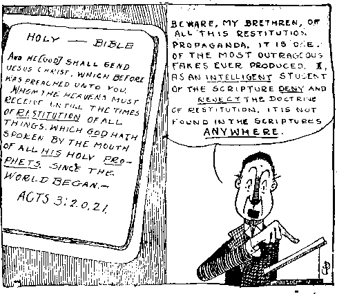
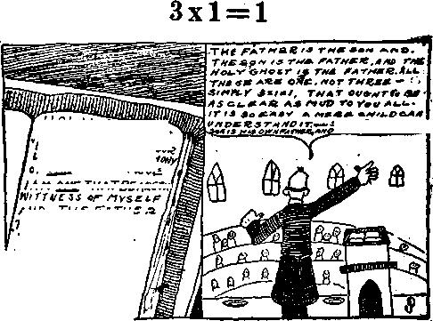

Dec. 20, 1922, Vol. IV, No. 88
OJJ9O Published every other H£] wecfc at 18 Concord Street, \J|F Brooklyn, N. Y., U. S. 4.
five Ceac* a Copy—$1.00 a Yeu
Cauda and Forsicd Countxlsa. ILH
Tou 4 WEDNESDAY, DECEMBER 20. 1822 Nft. 8S
CONTENTS of the GQLDEN AGE
LABOR AND ECONOMICS
■ Why Men Strike ............... *________________ ...
SOCIAL AND EDUCATIONAL
Growing Old o carefully ........................... .
POLITICAL—DOMESTIC AND FOREIGN
Brief Screed on Sociology ................. ....173
SCIENCE AND INVENTION
About i Jc< i rods ..... ,...... „.........177
Huw iS the Earth to be Subdued?
HOME AND HEALTH
Dictury Regimen ................1 SO .\eiliritis I •jet ........ ,...1X1
Oboity ....... .....ISO iT.ddhigs, etc. ..
In Mise of lilieumaUstn ISO Tubori ulosis Diet ...
In i.iwr Disorders ........... 1 So Salads, C1r. ........................1X2
Con^limuhm ....... ..fstr Siiggoumi i.i Sufferers ....1X2
Brun Bread, Biscuits, etc. Ixo 'fvn J n-lia r Secret
TRAVEL AND MISCELLANY
To an Intimate Friend ... .-.............. ....
RELIGION AND PHILOSOPHY
Mimricw in Ninetcen-Twenty-Two
Rulei>—-Fast. Present and
Experiences of a t'alliojic 184
Christian Science Morality 185
.Sanctified Hash• Factories 187
Where Are the Clergy? 188 New Application of an
Studies in the 'Tlarp of
ftibllahed ererr other Wednesday it 18 Concert flWrt, Brooklyn, NT......u. S. A.
by WOODWORTH. BUDDINGS and MARTIN CIATTON J. WOODWORTH.......Editor
ROBERT J. MARTIN .... tatow Mintcrf ' WK V. SWUNG* ...... tefj ind Trm.
(feptrtMn uM prvpriilart. AAdraat: IB Concert i Street, Brooklyn, N. T, . . . . u. 8. A
j FjTB CBWT* A ©OFT — 11.00 A Y1A1
i ratsiGN omcti; Brtffeh: 84 Craven i Terrace, Lancaster Gate, London W. * 2; Canadian: 270 Dundee fit. W.,
I Toronto, Ontario: Auetralaeian : 408 । ©olllne BL. jWbouE**, AuetnlU.
Mak* rwitf*ne*a to Tm Golden J.?a Wand m nceed-dia natter H NreeMya, ML t • War Un AH ef VM I.
»s==
T«Iuh IV
Brooklyn, N. Y., Wednesday, Dec. 20, 1922
Number 85
THE Benedictine Convent of Perpetual Adoration, Clyde, Mo., publishes among other booklets one which it entitles “Wonders of the Miraculous Crucifix of Limpias,” narrating that a wooden image of Christ, which is fastened to a crucifix in a Roman Catholic church in Limpias, Spain,
*. . . seems to assume life, and many spectators behold His sufferings, agony, and death, just as these mysteries of the passion took place on Calvary. Now- He moves those grief-filled eyes; now He turns the thorn-crowned head in various directions; now He opens and closes those parched and burning lips. The expression on His divine countenance changes in a manner that' moves one to tears, turning from the ordinary color to purple, then to ashy-gray and the pallor of death. Cold perspiration covers the body. Bright red blood oozes from the wounds, especially from beneath the cruel crown of thorns, and trickles down upon His face, shoulders and breast. The parted lips show the mouth filled with foam and blood, and at times a fresh stream gushes forth from the sacred wound of His side.
“The peculiar feature of the phenomenon is that some of those present behold the prodigy with the most dear distinctness, while their neighbors perceive not the slightest change in the Holy Christ.”
According to the booklet the Rev. Gaspar de Cebrones, guardian of the Capuchins of Coruna, Spain, writes that
proaehed the Image and laid his hand on its breast. To * his great surprise, he noticed that the palm was moistened, covered as it were with sweat, from immediate
“. . . one of the ’Capuchin Fathers, Father Jalon, ap-contact with the image.”
The booklet declares that on Wednesday, June 25, 1919, while four thousand pilgrims were visitingthe church
“. . . hundreds of electric lights flooded the place with their splendor. No sooner had the Mass begun when, to - the utter amazement of the people, the prodigy was repeated. The multitude observed that the image not only moved the eyes and the lips, but that a spark of life flashed over the mysterimls face, and that bloody tweat dripped from the afflicted countenance."
It quotes from El Debate, of Madrid, an experience of Marquis de Ugena in which the Marquis narrates that when his wife and children entered the church the children told their mother that they saw the Lord smile, but she herself saw nothing. ’
“Soon after it seemed to her that the image moved its head. She looked attentively at the crucifix, fearing, however, it might be a delusion. Taking for granted ' that it was an effect of her imagination, she asked the children what they were seeing. Both directed their gaze upon our divine Savior, and replied at the same time: 'He is moving His head from one side to the other.’ ” .
The booklet proceeds with an account of the ’ experiences of an English layman who writes that, while at mass
“I see that a kind of cloud rises, spreads and coven the feet, then the body, the arms and later all the cross of the Christ of the Agony, and only the divine face remains with its powers, most tranquil and most beautiful ; and at the same time all is illumined with golden light, most intense. After some moments, I do not know how many, this cloud disappears or, rather, passes which I see clearly and perceptibly as one sees a cloud passing over the sun.”
It quotes from the Dit,rio de Navarra, July 29, 1919, the experiences of a medical student, Heriberto de la Villa:
“Scarcely had I stepped into the church, and looked t at the Christ, when I saw that He moved His mouth, as though He were speaking just naturally. I looked more carefully, and saw that He turned His eyes in different directions. Thereupon I placed myself on the right side of the church, beside the sacristy. I gazed again at the Holy Christ, and saw that He looked toward the side opposite me, then threw at me a terrible. piercing glance! I trembled and could not help but cast down my eyes. When my excitement had subsided, I looked at Him again, and saw that He looked in a direction to His right, at the same time bowing and turning His head in such a manner that I could perceive the back of His crown. Again He bowed His head, then resumed the ordinary position of the image. Once more He fixed on me a glance similar to the one before^
which made such an impression on me that I was forced to leave the church. All this happened in about four minutes.
“My emotion was so great that I could not return to . the church until five o’clock; and looking at the Holy Christ, I saw His face and breast gradually assuming a very dark blue color. His eyes moved now to the right, now to the left, now upward, now downward. His lips were a little parted, as though He had difficulty in breathing. This lasted about fifteen to twenty minutes. I noticed at the same time that when He looked toward the left,, His gaze rested for a time as though on a fixed point, and that when He looked down, His eyes gradually lowered and finally closed entirely. At the same time He closed His mouth, while an expression of pain and resignation lay on His countenance, which touched me exceedingly. I saw also that over the left eyebrow a wound was forming, from which blood pressed through the eyebrow, and fell on the eyelid. Thereupon I saw another drop of blood fall from the crown and roll down the face. I could easily distinguish this, because the blood was a light red, and contrasted distinctly against the dark blue color of the face. After that I saw blood fall copiously from the crown upon the shoulders, but without touching the face. The lips parted farther than before, and a white mass like foam issued therefrom.
“At this instant a Dominican ascended the pulpit.. The Holy Christ gazed at him steadily for five or six minutes, then closed His eyes and mouth, and remained thus all during the sermon. When the Father concluded with these or similar words, ‘And now, 0 Holy Christ of the Agony, give us Thy blessing,’ Christ opened His eyes, smiled, and bowed His head as though He were blessing us. At the same moment someone, asked me whether I dare swear to what I had seen. Immediately I wanted to say yes, for I was still beholding the miracle, but I refrained from it and deliberated whether it were prudent or not. Then I saw that the Holy Christ, who, as if wishing to prove to me what I had seen, again opened His mouth, and blood and foam poured forth copiously between the parted lips. At the same time His chin grew deathly pale, after which, like one dying, He directed His eyes upward with His last strength, so that only the whites were visible.”
The booklet quotes from Dr. Ant. Gutierrez de Cossio in The Adalid Serafico of Seville the following report of his experience when, in company with another physician, he visited the church with a view to finding some scientific . explanation of the alleged miracles. He says:
“I observe the change in His countenance in a clear, distinct and unmistakable manner. The Holy Christ passes over to the real agony, with all the characteristic signs of the dying countenance. His nose becomes peaked; His lips, drawn more tightly, grow more bluish and farther apart. The cheeks appear more emaciated, and the cheek-bones darker, and more protruded.”
The booklet quotes a writer in the London Universe, giving a leaf from the experiences of" Dr. Don Luis Nieto, a sutgeon of Valladolid. We will ask the reader to take special note of J this experience of Dr. Nieto, as it affords a due to‘the true explanation of these prodigies, and we will have occasion to refer to it at the con-elusion of the article. The item follows: . ,
“Dr. Nieto had a dream in which the image of the ‘ Christ of the Agony appeared to him. Moved by thia apparition, he made a pilgrimage to Limpias to com- ; pare the vision he had seen with the figure there, With which he was unacquainted. What was his astonish- ' ment to find that the eyes moved with the same sweet expression, directing towards him a piercing, penetrai-ing glance as in his dream. The impression caused him \ to lose consciousness for several minutes. He stated that ; he was perfectly familiar with all the details of the " church, of which lie had never read even a description.”
The booklet takes various items from the Seinana CatoUca, one of which relates to a child <
who declares that the figure on the cross said, in ,
Latin the words, “Farce, Domine', parce populo ■ -Tuo,” which-the child did not understand, but which, translated, means, “Spare, 0 Lord, spare Thy people.” Another relates to the experiences of Reverend P. Martinez, pastor of Baneza Leon, who narrates as follows: '
“Shortly after Holy Mass, as I was about to begin ■'/ my homeward journey, I noticed that the Oyes of the image were animated with life, that they turned now to the right, now to the left, now heavenward. Then ~ the Holy Christ fixed His gaze directly in front, and after that, let His glance sweep around in a semi-circle. '
“I arose—hitherto I had knelt—changed my position, , and asked others whether they saw anything. They.; answered, ‘No.’ I looked again and once more beheld' . the eyes of the image moving like those of a living , person. I still mistrusted the apparition, and a second/ time asked the bystanders whether they saw anything. Again they replied in the negative. I took other measures of precaution—I borrowed three different kinds of field-glasses. Each of these I used several times, but always beheld the same wonderful phenomena.
“Being thus assured, I observed that our Lord’s gaze turned in every direction, a longer time to the left and heavenward. They were sad glances like those of a per- ■ son who tries in every possible manner to assuagetha grief that oppresses him. . . . - /■ t :
“Our Lord raised His eyes pleadingly toward heaven. ... They were so filled with tears that it was difficult: for J Him to see—a circumstance which I observed twice. Only one look of comfort, or rather of alleviation, did I detect on His countenance. ... ' ,
“Finally, after all this, I saw our Savior move ffi^ lips, open His mouth twice for a deep breath as if to"v
side to side. At sight of this, my heart beat so violently that I could, scarcely breathe. I was extremely nervous and for a long time dazed.”
Readers of The Golden Age who have read in our columns about Russia’s cotton saints, and who know of the thousands of other hoaxes that have been perpetrated by a. money-loving clergy, may smile at the foregoing as. another of the infinite .number of frauds which the Papacy has foisted upon its subjects. Perhaps they are right, but we incline to the thought that there is another and better explanation. That explanation is Demonism.
The demons work upon the mind; this accounts for the fact that some of the people see the image move and other do hot. In the case of Dr. Nieto it is plain that the demons had first made an indelible impression upon his mind while he was asleep; and later, when he saw the image, they had only to repeat and deepen the impression already made.
Spirit mediums in India cause their audiences to see a tree grow right before them, and a boy to climb the tree and disappear into thin air. The sight is apparently real to the Jjuman eye, but the camera at a distance of fifty or a hundred feet discloses nothing except the smiling Hindu with his credulous flock standing about him in a gaping circle.
Before the image began to move and talk, the church at Limpias was so poor and so poorly attended that its pastor was on the point of ; closing it. Now it is crowded to the utmost, and the revenues are tremendous.
obtain relief, and then again make the movement as if _^_He would say: 'Now I can do no more!’ Thereupon
1 His countenance grew ghastly pale and sank in. I do not know what it was, but something flowed from His mouth on both sides to the chin. After that He drew two long, heavy breaths, like one dying, directed His eyes heavenward and died.”
>5 [But (Romans 6:9) “knowing that Christ being raised from the dead dieth no more; death hath'no more dominion over him,” we wonder . how the Reverend Martinez ’■econciles his vision with his Bible.—Ed.]
The Right Reverend D. Pedro Segura, coadjutor bishop of Valladolid, Spam, says:
• “I saw quite distinctly how our Savior opened His « lips and closed them again. He opened them quickly, but closed them slowly. Our Lord did the same in the afternoon, when I alone observed the phenomenon for about ten minutes. I continued to look attentively, and saw the mouth close slowly, until the lips came together so that the dark space between the partially opened lips disappeared entirely. Neither the rays of the electric lights which illumined the body from both sides, nor those from the six candles which shone upward from "• the altar, could reach there. I admit, however-, that this movement made no impression on me. I did not
i believe in what I saw.
“Again I looked at the Holy Christ. I distinctly saw Him move His head from one side to the other. This - was done gradually, as though it were fastened behind. ' Great fear and intense pain were depicted upon His ' countenance, as is the case with a person who is dying . and breathing his last. Even this phenomenon made no special impression on me. At Holy Communion, I once ' more looked at the Christ, and commended my diocese to Him. This time I observed His eyes moving from
*,•
DO YOU ask why men bind themselves into organizations and sometimes go on strike, enduring suffering and hardships themselves and causing the public great inconvenience! Well, we shall tell you the real secret in the matter.
Back in the dawn of creation a man and a woman stepped fresh from the hands of their Creator. They were perfect in form and feature and lovely beyond degree. They were placed in a beautiful garden, where the hands ---of a wise Creator had graciously provided everything for their comfort and well-being. They were given power to produce a perfect race of people, and. the divine injunction was to “multiply and fill the earth.’’ The only restriction placed upon this happy couple was that of perfect obedience. This they failed to render, and as a consequence were driven from their Eden home out into a cruel world to battle against its poisonous elements and to eat bread by sweat of face until they returned to dust.
Had Adam and Eve remained obedient to their Creator, as their family increased they would have extended the borders of the garden until it embraced the whole earth; and such things as sin, sorrow, sickness and death would be unknown to the human family. And today, instead of a world filled with selfishness, strife and revolution, we would be enjoying a world
wide paradise, filled with happy men and women. '
Who is responsible for this unhappy state of affairs? Satan, the god of this evil order of things. Before his expulsion from the courts of heaven he was a beautiful angelic being. The Bible declares that it was his pride and ambition that caused his downfall. He conceived the idea of a world empire for hiniself by corrupt. ing the human race at its very fountain head. This he succeeded in doing, thereby enacting the greatest tragedy of all time.
Ever since that fateful day it has been the desire of man to live from off the labor of the other fellow and, if possible, to hold his brother in a state of bondage, for long centuries it was lawful for one man to ’ own another; and, strange to say, the source whence that right came was never questioned.
Finally there came upon the stage of human action an humble Carpenter who taught a gospel of love and simplicity destined to shake society to its foundations. Whether this Man was a member of a labor organization or not, the records do not state; but we do know that he was a friend of labor. He gathered about ■ him a handful of ignorant, unlearned men and so taught them as to stamp lasting impressions upon their minds. His promulgation of the Golden Rule started a chain of thoughts percolating through the minds of men; and soon the humble bond-slave began to ask this question: “Why should another man own me?”
The history of the fight for freedom and liberty is a long one, filled with oppression, crime, • and bloodshed. When the American government was established with its wonderful document guaranteeing freedom of thought, speech, and religion, our shores became the Mecca for the down-trodden and oppressed of every land. America was hailed as the land of promise by millions of noble sons who found refuge on broad acres upon its hospitable shores. But as it was in the days of the prophet Job, when the lovers of truth'and righteousness came to present themselves before God, Satan came also.
No sooner had the yoke of British tyranny been thrown off and the guns ceased firing around Yorktown, than there began the development of that spirit of selfishment among the American people that has so prominently marked the English-speaking people for centuries. As a result, we find ourselves today in the
grip of a monster whose greed knows no bounds, y and whose interest is served by the very devilf^ hiniself. „
There is mapy a stain upon, the^pggps+jg^ . y America’s industrial history that wilt ever «®e-main a disgrace to a nation calling itself civil,-?: f ized. ; ; '
It is injustice and oppression, and the knowledge that they are not getting a square deal, that causes men to bind themselves into unions and exert their economic power in order to force ■ big business to pay a living wage or put into operation working conditions that are bearable.. >
What is the final remedy for strikes? you ask. . And what is the meaning of the trouble and distress upon the nations of earth today? The v7 humble Carpenter who made such an impression upon the minds of His followers also taught ' them to pray: “Our Father which art in ■ heaven, hallowed be Thy name. Thy kingdom come, Thy will be done on earth, as it is done in heaven.” All down through the age there have been some honest hearts who have continued to ■ pray this prayer, and who have looked for the < time when this kingdom would be established. ’
The Bible shows this humble Carpenter to be -the Son of God—the Ransom-price for Adam, who had been justly sentenced to death for his '• disobedience back in the Garden of Eden. This Carpenter gave His life a ransom for all. Ths Bible shows that forty years before the estahp ' lishment of His glorious kingdom, Jesus would > be present in the earth, yet unobserved by all A but a special class—“a little flock.” y
Jesus said that His kingdom would be set up C during a time of great trouble and distress upon \ the nations; that men’s hearts would fail them' ". for fear, and for looking after the things which are coming upon the earth. He said that the -1 nations would be angry and engaged in ths -bloodiest war of all history; that this war would ’ be followed by famine, pestilences, and great social upheavals which would culminate in anarchy of the most violent form; and that unless those days were shortened the human race wotdd '* destroy itself from the face of the earth. ' r *
The Bible declares that after all the selfish > schemes of man have been given a thorough test, his pride broken and his heart humbled in the great time of trouble, he will be ready for God’s message and the application of His reMH edy—“that ye love one another?’ ~~
Sv”"
The experience mankind has had with sin ^agduring the past six thousand years has been a lesson they will never forget. Never again will f. they heed the chastisement that shortly is to be , visited upon the nations, wild in anarchy.
The Bible shows that the kingdom to be es-_ tablished on1 the ruins of these earthly govern-R ments, is a kingdom of joy, peace and righteousness. It will be a kingdom in which the earnest-hearted, toiling masses of men will prosper and not the profiteers. It will be a kingdom in which no giant trust or corporation will exist for the purpose of oppressing the people. Satan, the chief oppressor, with all his ' wicked influence, is to be restrained for a period of one thousand years; and during that time all the earth shall be filled with the glory of the Lord as the waters cover the sea.
The Prophet declares that in that day the people shall enjoy the works of their own hands. ’ - They shall not labor in vain nor bring forth for v” trouble. And as a reward to those who have ’ faith in this glorious kingdom, in which Edenic conditions are to be restored, and sin in all its degrading influence forever blotted out, the writer of Revelation (chapter 21:3-5) lifts the curtain and in these beautiful words .gives us a vision of the glorious conditions that will prevail upon the earth: “Behold, the tabernacle of God is with men, and he will dwell with them, and they shall be his people, and God himself shall be with them, and be their God; and God shall wipe away all tears from their eyes: and there shall be no more death; neither sorrow,. nor crying, neither shall there be any more pain: for the former things are passed away." This will include strikes, lockouts, etc.
The only remedy for strikes and for the present unhappy condition of society is the establishment of this long-promised kingdom in which men will practise the Golden Rule, instead of the Rule of Gold. So let all who have 1 faith in the divine promises rejoice in the fact that just beyond the dark clouds of trouble lies the Golden Age—God’s kingdom.
IDO NOT claim to be a Bible Student after the manner of the I. B. S. A., but I do appreciate the pungent truths that you give to the world. Long may your-magazine live, proclaiming the truth concerning the various phases of our civilization, which is founded not on the truth, but on the fear of the sword! 1
At that time I knew nothing of the teachings of the Bible Students or of the works of the late Pastor Russell but I told people, when the .first crash of the World War was heard in 1914, that this civilization had reached its height and that from then on there would be trouble until the Son of God should be revealed.
I could never understand the doctrine of the destruction of the earth, as I saw that this earth the footstool of God, and that Jerusalem is the City of the great King. But somehow 1 saw ^.purged earth, the curse removed, restoration and blessing,, the patrimony of the Savior, the kingdom of God. “And God shall wipe away all tears from their eyes; and there shall be. no more death, neither sorrow, nor crying, neither shall there be any more pain; for the former things are passed away.”—Rev. 21: 4.
Before I knew about the slogan “Millions now living will never die,” so certain was I of the incoming kingdom that I had prayed that if it were God's will, I might live until my eyes should behold our Lord coming in His kingdom. I felt an answer to that prayer in my soul; and now my vision extends beyond the present order of things, and over into the Golden Age. As I look over into that age, with my spiritual vision cleared of the errors of past doctrines, and with a clearer comprehension of the redemption through faith in the atoning blood, I feel a quickening impulse of the power, granted to those millions now living that will1 never die. Hallelujah!
“Though round about Him clouds and darkness Obscure the beams of dawning day, Above the clouds, upon the mountains, The watchers see the morning ray."
F,
THE thought of growing old is to many an unpleasant one. They love to think of youth, with its overflowing, bounding energy, its vivacity, it's rosy outlook on life, its freedom from care and worry, and its ability’ to throw off what cares it has. Still others think that grow' ing old is a matter of fact, and treat it as one of • the inevitables. They think that it is useless to worry about what cannot be helped, and so feel that they should enjoy life while they may—“It ' will be time enough to think of bld age when it ' conies.” A smaller class think of old age as a time of accumulated wisdom, when, after a life well spent, one can step aside to let others enter the world's busy activities, and yet be interested in all that is going on, though not a participator, being sought after more as a sage for advice and wisdom. Such was the reason why old men composed the senate of ancient Rome— that the city might be guided by their wisdom and experience, and kept from hasty blunders.
Would that the modern world recognized and respected the experience and wisdom of the aged, instead of entrusting the guidance of the nation to those whose experience is small or at least not yet ripened into wisdom. Youth and middle age are too impulsive and too full of folly to be entrusted with the w’elfare of any nation.
In spite of the disrespect characteristic of modern times, it is yet true that the silvered head is a citadel of majesty. The Israelites of old were commanded to “rise up before the hoary head, and honor the face of the old man.” “Honor thy father and thy mother, that thy days may be long in the laud which the Lord thy God giveth thee.” When the wisdom of the Creator is pictured in Daniel’s prophecy, He is called the Ancient of Days, and is pictured with white hair. Jesus, also, in the New Testament is pictured in glory with white hair, to represent the wisdom of accumulated experience.
In old age itself there is nothing to be desired. All the powers of mind and body are failing, and helplessness closes in upon the individual as does darkness after the set of sun. So if one has not built up a treasure of wisdom and of relationship to his Creator (for the reverence of the Lord is the beginning of wisdom), old age is extremely undesirable. Old friends are gone; the new generation is out of sympathy; and one feels out of place, like the last rose of
summer and the last leaf on the tree. If, however, one has built up treasures of wisdom anA'" g knowledge, then the wise seek such out forin- ' struction; and God’s companionship ;makes»the failing of one’s abilities but the-gradual and \ ; peaceful yielding of life itself to Him for a long \ rest, till He shall call us forth again from the * tomb in greater strength and majesty. So the closing advice of a wise man gained from expe- ■ rience is (Ecclesiastes 12): . '
“Remember now thy Creator in the days of thy youth, while the evil days come not. nor the -years draw nigh, when thou shalt say, I have no ; pleasure in them.” Those who have lived in companionship with their Creator invariably wish they had started to know Him earlier in ' life. The years before that time seem but lost years. Wise are they who start to know God in their youth, while vigor and strength enable ( them to build up treasures which old age cannot Y fade, and before the evil days of physical de- • cline and infirmity have overtaken them. '
“While the sun, or the light, or the moon, or ? the stars be not darkened”—before physical and -mental vision fail, wrhile yet the eyes ami ears : can drink in the Creator’s messages in nature, and observe their grandeur and hence have rich, Y deep communion for many years. To those who ' know' their Creator, the earth is full of wonders.
and beauty. As David said: “O Lord, how naan- ' if old are thy works! in wisdom hast thou made > them all; the earth is full of thy riches.” “Or the clouds return after the rain.” Old age can- „■ not, as youth does, renew its vigor after a siege of sickness or trouble; its buoyancy has gone.
“In the day when the keepers of the house tremble.” These keepers are the arms, the house being the body. All have noticed the trembling hands and arms of the aged. “And the strong men bow themselves.” The strong men are the lower limbs, and this refers to the -bent knees and tottering steps of old age. “And the grinders cease because they are few.” The . few remaining teeth cease to grind the food properly. “And those that look [the mental '■ faculties] out of the windows [the eyes] be. darkened. ’ ’ All know the bright eye and quick : mind of youth, and also the dim eye and fading memory and slow thought‘of old age.: The sun . of life is setting, and the darkness of evening settles over the faculties. “And the doors [the; ... ears] shall be shut [become deaf] in the streets 8 ' . '
[In the communications of life, in story and after-dinner speech and hearty jest, the deaf -< ear has no enjoyment; the door is shut], when f,i the .sound of the grinding is low [when dinners L and bancfuets are no longer enjoyed because the
' teeth are few and the digestion is poor. Old age
. without the fellowship of the Creator is lonely],
' And he shall rise,up at the voice of the bird [be
. a light sleeper, not able to find the sweet, deep
sleep of youth]. All the daughters of music shall , be brought low., [ the harmony of the parts of
l the body fails, and discords of disease or weak-
■ ’ ness break in upon the system].” The failing
- powers cease to catch the strains of earthly en-
- chantments. The members of the body do not
. work together harmoniously as in youth; but if
he have the ear of faith he catches strains of music, heaven’s melodies, sweeter than Solomon in all his glory ever knew. In perfect life the ■ human body is like a grand symphony, all its . parts working in beautiful grace and harmony]. k -‘Also when they shall be afraid of that which is high [old age dare not trust itself much above terra firma, for the fear of a bad fall], and ’ -■ fears shall be in the way [fears of stumbling, of getting cold, of being run over, take away . the confidence in their bodily powers], and the . almond tree shall flourish. [The translation by Isaac Leeser renders this passage—4 the almond ' tree,will refuse its blossom.’ In early times the
almond tree was a sign of spring, and of re-‘ newal of life and vigor and. warmth, it being one of the earliest to blossom. So here is represented that old age has no hope of refreshment and renewed vigor, the body will not replace its decay, and hence hope and brightness fade.]
“The grasshopper shall fie a burden [literally ' •—shall drag itself along—illustrating the labor,
burden, and sorrow of extreme old age]. And ■ desire shall fail [cease to have so much interest ' and pleasure in earthly vanities, or beauties of nature; all earthly desires fail]. Because man . goeth to his long home [long, but not eternal home in the grave, to remain there till the resurrection]. And the mourners go about the streets [a reference to the funeral procession and the mourning of his friends].” In Solo-man’s time the resurrection was far away, and f for the world generally the grave has been a ’ home or dwelling place for centuries. In ehap-
• ter 11:8: “If a man live many years and re-rv 'joice in them all, yet let him remember the days
* of darkness; for they shall be many.”
“Or ever the silver cord [of life] be loosed [we lose our hold on life]; or the golden bowl be broken [the body which contains the precious life blood be broken down in decay]; or the ‘ pitcher [the lungs which draw in life from the fountain, the surrounding atmosphere] be, bro- ’ $
ken at the fountain [cease to draw breath] ; or ■
the wheel [the circulatory system of the blood, which is like a wheel in that the blood is contiri-ually circulating, but at death, stops] broken at , ' the cistern [the heart]. '
“Then shall the dust return to the earth as it was [when the body can no longer perform its office, the dust, or elements of which it is made, returns to the earth as it was—mere inanimate dust]: and the spirit shall return unto God who gave it. [The spirit or breath of life returns to the atmosphere, whence God first took it and caused it to enter into Adam’s nostrils. It returns to God in that it is no longer under human control. After the body is cold, none ‘ save God can restore the breath].” . '
The being has then died; but in the memory, of God remains the full record, and injhe resurrection morning He will reawaken the soul : from its sleep of death (Daniel 12: 2), and with a suitable body give it life and consciousness once more. So the Wise Man sums up the les- . _ son:
“Let us hear the conclusion of the whole mat- -ter: Fear God and keep his commandments;
for this is the whole duty of man.” God simply requires obedience to His lawT in all its applications. This law, as the Master stated, is to love God with all one’s heart [the affections’must center on God. He is to be chief in all that we , do or say or think, so that if every other loved one or thing must go we would not lose our faith and trust in Him]; and with all one’s mind [keep the thoughts and intents acceptable to Himi; and with all one’s strength [the bodily powers should be used in harmony with His will] ; and with all one’s soul [all our being, all that is within us should praise and glorify Him]. -And we are to do all this not from a sense of duty, nor because we must, but because we love to please Him, realizing that His command- ' ments are reasonable, just, sensible, and not irksome. And the second part of the commandment is to love our fellow man as we do ourselves; be just as anxious for his welfare and happiness as we are for our own, and to realize that our full happiness and its security depend
on making our fellows happy also. This will be the rule when God’s kingdom is on earth. Is it any wonder that Paradise will then be restored!
“For God will bring every work into judgment, whether it be good or whether it be evil.” The great judgment day is the thousand-year reign of Christ, when all things shall be made
A Warning to Girls By a. l. Potter
GIRLS should always refuse to accept offers many girls who accept these invitations repent of automobile rides from men whom they of it with a lifetime of remorse.
do not know or of whose character they are'not sure. These men are usually very agreeable in manner and seem harmless, but often are absolutely corrupt and without conscience; and
open and manifest, and mankind will awaken ■ from death possessing the result jn character^ which each has made in the present life. .
"With the ancient is wisdom, and inleugfh, of days is'understanding. With him ii wisdom , , and strength, he hath counsel and understand- . ing.”—Job 12:12,13. '
Parents should also see that their daughters do not allow themselves to be placed in danger in this way and also in danger from being out late at night.
A MAKER of epigrams once said: “Man is a creature of circumstance and environment.”^ And it is these circumstances and environments which influence the individual’s outlook on life generally. This'is true, not only of the present generation, but of all generations. Time was when the so-called under-dog accepted his condition as the natural course of human events.
It is only within the last one hundred years or so that the human race as a whole has been doing its own thinking. For thousands of years the race has had its thinking done by professional thinkers, and has been guided and governed by their deductions; and these professional thinkers have invariably named the price of their services, and their price generally was ’the servitude of those for whom they did the thinking.
“Every man has his price” is the expression of those who have been disillusioned and embittered oy the intensity of the struggle for existence, the basis of which is three meals a day and a place to sleep—and “keeping the wolf from the door” has beconie a proverb.
It will be observed that during this last period of one hundred years while the race has been doing its own thinking, no really new ideas or theories have been brought out. By ideas and theories I do not refer to the great increase of knowledge along mechanical and inventive lines,
but rather in the relations of men to each, other, to their origin and destiny, and to. their Creator. -Ci Every idea or theory presented during the last . ■■■'.< one hundred years is something old as the hills, but camouflaged to make it appear new. ? .
Take the modern theory of evolution as an -- • '■ instance; that is the old Grecian theory or spec-' ulation respecting the constitution of matter ‘ and the origin of things in general, taught by" Empedocles and Democritus. The increase of knowledge, together with the sum of all the ; learning and experience of all the past genera- ■ tions, is supposed to lend a little color to the’ ' modern evolutionist idea of the “brain age.” " - 3*
It will be further noticed that during this 10^-'' -, year period under consideration, in spite of the . great increase of knowledge, the human race • < has been getting more and more restless and -discontented. As the knowledge increases, so - — does the discontent; one keeps pace with the -other. .
The old ideas and theories are now for the., first time being really tested out. Was the di- '■■■» vine right of kings a real, or a fancied righj^ If the divine right of kings is right, &:republwM . is all wrong; and vice versa. The deductions of . the afore-mentioned professional thinkers "are going to pieces, “The history of the world is 1 an account of the growth among mankind of the. • - jV consciousness of freedom for the race.” . ,
For ages kings were the law and they had ‘.^^
• ” /'.-I
their day. Side by side with them were limited monarchies, and they had their day. Then came
[ "the idea of government of, for, and by the peo-|? pie; and representative government is breaking ‘. d&tM‘'‘THe Madrid Ms‘had the wool pulled over ? if$‘!JdyeS fco^tiauch that every new scheme is : • looked upon as just another method of shearing " ■ the sheep.,
i' One result of all this is the setting up of'a false standard, and every person not in sympa-;• thy with this false standard is branded as a Bolshevist. Hence the radical and the agitator have, a large following. The Socialist is a prod’’ uct of this false standard. I do not mean that the standard of the Socialist is a vicious one, ■ ■ but that Socialism is merely a symptom of a j diseased condition of society. If equality and J cooperation were established facts, Socialism would automatically disappear, in the same way ■- thM when the cause of a dis'ease of the human body is removed, the symptoms disappear.
“Train up a child in the way he should go, " and when he is old he will not depart from it,” ' and “the love of money is the root of all evil”— k besides being Bible, these are good common ■ sense maxims. Even so, one trouble in the .. world today is the lack of common sense, and _ the commercializing -of the faculties, the emotions, and the abilities of the individual.
~ A way out of all these distressing conditions, - together with an amicable adjustment of affairs 1 generally, has been sought of all the prominent men who have acquired some distinction in the . world of affairs that is now going to pieces.
It is just like a man in the water, out of his depth, trying to take lessons in swimming from a man who is drowning. What kind of advice can a multi-millionaire offer for the adjustment of conditions and circumstances, after he has spent his life taking advantage of those conditions and circumstances to feather his own nest ?
Another illustration of this is to ask the man . who set the straw-pile afire how to put the fire out. People somehow have it in their heads that the man who has been astute enough to acquire a monoply of the wealth of the world is the man to lead the world back -to “normalcy.” Yes—by the nose.
Years ago people fought singly until some’ body said: ‘ * Unity is strength. ’ ’ So they joined hands. The idea of the strength of unity is also being tested out. We had a world-wide illustra-< tion of that idea for four awful, solid years— the triple alliance and the triple entente; and in the light of things as they stand today, not as they stood on November 11, 1918, but as they stand today, who won the war ? Is unity strength? The weakness of Germany was its strength. This is true of all the nation^ eo. gaged in that war. h ■Vv‘?
From one extreme go to the other. Consider a baby. What is a baby’s strength? Its helplessness, its weakness, is its strength. Everybody is its friend.
The same thing applies today to the railroaders and the miners. The railroad corporations and the coal operators—their strength is their weakness. When the coal is all gone, and snow flies, and the railroads are not turning a wheel, who is the sufferer?. The public. And who is , the public? The coal operators, the miners, the railroad corporations, the railway men, and a goodly portion of the other people.
Unity is strength. Years ago a certain man, becoming embittered over the death of his wife, printed a motto, which he hung over the mantel in his library—“All things come by chance.” Twenty years later, after he had had time to think it over, he added the one word, “Per- ' haps.” Unity is strength—perhaps.
The triple alliance and the triple entente turned out to be a snare. The coal operators’ combine, ’the miners’ union, the railroad corporations, the shopmen, and the Big Four are turning out to be another snare. It’s all right to be wise after the event. Any simpleton can lock the stable door when the horse is gone. Yes, but these things were all foretold in the Bible.
In Zechariah 8:10, speaking of the return of the Jews to Palestine in great numbers, the prophet said: “For before these days there was no hire for man, nor any hire for beast; neither peace to him that went out or came in, because of the affliction; for I set all men every one against his neighbor.” If all these things that are happening in the world today were foretold in the Bible, why did not the ministers explain them? ’ ,
Here was the ministers’ opportunity. There have been two courses open to them: (1) To take sides in the controversy; (2) To stand aloof, and expound the Word of God, show the world the trouble coming, and point to the kingdom of God beyond.
The records show that the ministers, the clergy, instead of expounding the.Word of God, have largely turned infidel and evolutionist; they took sides in the large, international controversy, triple alliance versus triple entente, and are now taking sides in the internal controversy. Some are for labor, some are for capital; but how many are for the Bible, the Word of God?
-i
And the world knows it, and the clergy know that the world knows it, and the world knows that the clergy know that the world knows it. Do not take the writer’s word for it. Lookjip the church notices and reports of sermons in the newspapers for the last ten or twenty years, and see how the clergy have turned infidel.
Mr. Roger Babson, publicist and statistician for the B. B.’g, big business, went on record by saying that if the Christian church (that is, the big church, with the clergy at the head of it) could not save the world, the world was done for. The Christian church referred to (the big church—Catholic and Protestant) is in the same boat with the B. B.’s; it has taken advantage of prevailing conditions and circumstances to feather its own nest.
I do not \vant to be understood as inferring that the clergy have made fortunes at their business of preaching; for some of the clergy are as poor as church mice. But, as a class, they have stood in with big business. While the big bees were feathering their nest, the clergy kowtowed. Big church would have a slim living without the Busy Bees. Big politics could hardly'get along without the Busy Bees and the Busy Cees. And the Busy Bees would have a fat chance without the Big Pees and the Busy Cees. Who set the house afire? Who qan put the fire out?
If people really knew what to do and how to do it, it would not take a great while to get out of the mess, out of the slough of despond. But the people do not know.' As the Bible says —the “people are destroyed for lack of knowledge.”—Hosea 4:6.
The Solution .
THEBE is just one way out of the mess, and only one.
“And the parson made it his text that week, and he said likewise,
A lie which is part a truth is ever the blackest of lies;
A lie which is all a lie may be met with and fought outright,
But a lie which is part a truth is a harder matter to fight." -
The fact of the matter is: For thousands of 1 years' the world has been fed upon lies and misunderstandings; and these .lies and misunderT ' standings have been so skilfully presented and“ mixed with a little truth, that the whole world Z has been deceived. Almost every home in Chris- -tendom has had on its bookshelves or on its parlor table a mine, a, treasure of truth, the , • • depth of which has never been plumbed by man.
I refer to:
“The Bible—the oldest book in existence; it has out- .
lived the storms of thirty centuries. Men have endeav- <
ored by every means possible to banish it from the'fr "0 of the earth: they have hidden it, burned it, made it a L crime punishable with death to have it in possession, - -and the most bitter and relentless persecutions have been ,; : ■ waged against those who had faith in it; but still the „ book lives. Today, while many of its foes slumber in ‘4 death, and hundreds of volumes written to discredit it and to overthrow its influence, are long since forgotten, -y the Bible has found its way into every nation and language of earth, over two hundred different translations • of it having been made. The fact that this book has survived so many centuries, notwithstanding such unparalleled efforts to banish and destroy it, is at least ' strong circumstantial evidence that the great Being , whom it claims as its Author has also been its Preserver.” - ,
In the Bible will be found the great laws of the universe, besides the origin and the destiny. ‘ ; i of man; in fact, almost any sensible question a / -man might ask is answered in its pages. Every ' * condition of man is depicted in it—the fool, the < wise man, the rich, the poor, the high and the < low, young and old, small and great, sick and ,, well—any condition is shown in its pages. &
There is the letter and the spirit of law. This is manifest in the laws of the land. The observ- , < ance or violation of law by the individual ia . intelligent rather than mechanical, whether the law is universal or national. The law is laid down in the Bible, and all the precepts found . in its pages will be found to harmonize with ' the law. Nothing is out of harmony. f
present distressful condition is to discard the
First find the letter of the law, then the spirit
of it, then see how the precepts harmonize with God’s universal law, and to the best of one’s
p-, .
f
t Dbcbmbeb 20, 1022
* £-• , ability live up to the knowledge acquired. With
' these few suggestions I close. Put away the ; fanciful ideas and speculations, and learn the ■ ii’h great truths hidden away in God’s Book of Life and Truth. The clergy, who helped set the world * afire, have denounced in no unmeasured terms . Pastor Russell’s volumes of “Scriptures Studies,” frequently advertised in this magazine. This, in the writer’s opinion, is a pretty good recommendation for these veritable Bible keys.
A time is near at hand when the cloud of superstition and confusion will be lifted from mankind, and the sunlight of God’s truth will instil into the hearts of all people the love of Jehovah. “For then will I turn to the people a pure language, that they may all call upon the name of the Lord, to serve him with one consent.”—Zephaniah 3: 9.
A Brief Screed on Sociology
THE first social unit was the family, whose male head was supreme authority in deciding ■ ■ all common interests. For mutual protection and benefit families combined to form tribes, i whose chiefs assumed titles to all lands and prerogatives; and tribal members had to’pay trib-' ute to them for the use of the land and natural ; . , resources and to pledge their lives to their service in battle in case war was declared.
’ ' In event a neighboring tribe was invaded and
conquered, its lands and natural trade resources . were divided among favorite and influential lead-■ ers who maintained their assumed prerogatives by means of deceptive lying propaganda. Spe-’ . cious arguments and data are employed to con
vince the masses that these prerogatives are ■ ’ employed for the public good, although they are
" employed solely to oppress the public and rob it of its natural rights.
God is supreme arbiter of the destinies of ft men and nations. His order and arrangement r are manifest in the laws of-Nature. Her laws ; are immutable, and her verdicts are not subject ft' to review. When man recognizes and honors
' . her laws there will be no friction nor conflict,
and nations will be self-perpetuating. Refusal - to recognize and honor those laws has destroyed : all nations of the past and has wrecked so-called
modern civilization. Her storehouse is abundantly equipped, to supply the present and future . materia} needs of all her numerous progeny.
- .v • ; Nature’s resources are used for the benefit
of her progeny and as constantly returned to her storehouse to repeat their useful functions. Atoms of matter never lose their identity nor change in function. All atoms of nutrition and fertility are being constantly returned to repeat their useful functions; hence Nature"’s supply is never diminished. If these atoms were de
By H. E. Branch .
stroyed or materially diminished the earth would become barren, and vegetable and animal life cease to exist. With carbon from the sun, nitrogen from the air, and iron from disintegrating rocks, the supply is constantly augmenting.
The entire world-population could be placed in Brazil and its density of population would be more than twenty percent less than that of Belgium at the present time. In round numbers the world-population is 1,600,000,000. Brazil has an area of 3,218,000 square miles. Belgium has a population of 6,815,054, an area of 11,400 square miles, and a population of 597.8 on each square mile. With natural law recognized and honored, over-population is impossible, and famine anywhere is due solely to an exercise of man’s vicious propensities in violating natural laws.
Land and natural resources are the common heritage of all mankind. Man has no natural right or title to land and natural resources not essential to his material well-being. A monoply of unneeded natural resources is a violation of natural law, a vicious crime against social order, and the prolific progenitor of crimes and famine.
The English Duke of Devonshire is reported as owning (!) 186,000 acres, 290 square miles of land, a territory large enough to.sustain 173,130 of Belgium’s population. Add to.This,millions of great thefts all over the world; and we can realize the cause of social unrest and why gaunt famine stalks the earth, surrounded by a superabundance of natural resources. Nature’s children have been robbed of their birthrights.
■ If ninety-five percent of the world’s population is silly enough to permit the other five percent to confiscate land and natural resources to
( 4 which all are equally entitled—-surrender tame; ' ly just and natural rights—it is the author of ” its own poverty, misery and degradation. Man ■ has no moral or just title to property that does ; not bear the impress of his industry or labor, > >. or that of others from whom, he received it as
f ' an equivalent in exchange. Possession and use ■ t for needed service constitute the only just and valid title to land and undeveloped natural re-;■ sources.
. “The law of demand and supply” as comr monly used is veriest tommyrot. Demand and
supply are natural functions and never vary in service unless obstructed by man. Nature creates demand and her supply is inexhaustible.
* . Nature makes me hungry and creates a demand
for food. Nature is the prolific mother of all ' . demands, great and small.
We have an urging, crying demand for good ”■ roads. That demand has been vocal and increasing in intensity for many years. We have the labor, machinery, tools, raw material in superabundance, all begging for useful employment for the common weal. Why do we not employ « our resources and labor for our common benefit? < Because the representatives of big business have hired us to catch driftwood on shares, and pay us with a very small part of our own products.
When land and natural resources are restored to the unrestricted service of humanity as designed by Nature, normalcy and stability will ’ be established, militarism will disappear, and peace and plenty will reign supreme. When all healthy men and women have to give an equivalent in social or industrial energy for the prop? erty they enjoy, society will always have a surplus, and famines will be unknown.
Commercial values are benefits and satisfaction derived from the use of product^
Dr. Irving Fisher, Social Economist of Yale, .counselor of Congress and the Administration, r has written a book of about 400 pages, “ Stabilization of the Dollar,” on a standard for com-mereiaL values, without telling us what commer-' cial value is or defining the character and com. position of a standard so that one would know one if one met it in the road.
. In The Golden Age of April 14, 1920, I discussed the Immutable Law of Standards, their character and composition, and how correctly . to determine the standard for any class of units.
A standard is the sum total of all units of a
given kind or class. Eternity, Gravity, Altitude, and Space include all units of time, weight, height, and capacity. The commercial’standard v embraces all units or factors of human industry S or enterprise. Gold is only one unit or product’ of human energy or industry; while the Stand
ard of Commercial Values must include all
units or products of human energy, just a^ the
Standard of Gravity must include and define all
With a defined unit or product of any kind for comparison we can determine the exact value . '' A of any other unit of the same kind. With an ounce product or unit of steam energy for comparison, we can exactly define all grades and . degrees of steam products or units.
Dynamos and engines are of many grades or < capacities, and different grades are defined by their results or products without consideration of time in operation. A two-horse engine will last as long in operation perhaps as a hundredhorse engine, but their results will widely differ. Men are human dynamos or engines of many and widely varying capacities, and the only way to judge correctly their limitations is by things done. “Hours labor” defines nothing—arrant nonsense.
When we recognize and employ Nature’s standard of values and issue currency based on units of labor energies in different denominations we shall have scientific, stable, automatic, self-adjusting currency subject to neither inflation por deflation. Then we shall quit catching driftwood on shares.
Democracy is a term employed merely to tickle the public fancy without any intention of applying its meaning to social affairs. Some seventy-five years ago Thos. H. Benton said: “The individual citizen and taxpayer has about as much to say in naming candidates and framing statutes for his own government as the subject of a monarchy has to say in designating the ; sex of the child that shall be born to rule over . him.” ..
Alb governments have been despotisms 4oper-ated through fictitious titles; to.land.and natural: resources. Two percent or less of world-population thus control mines, mills, factories, power sites, forests, oil fields, quarries, transportation, fisheries, etc., and thus dictate to the ninetyeight percent the terms on which they can employ natural resources. -
The self-imposed plutocrats of big businesi
ftft
example of Weylerism in Western Missouri in 1863 under Gen. Ewing’s Order No. 11.‘ J
The public refused to rise to the bait, and something had to be done to inflame public sentiment. The Maine was sunk; and by emphatic _ implication we iterated and kept reiterating the
public benefactors and men of truth, virtue, and charge that Spain had sunk the Mdiite tod wil- -' honor earnestly striving for the public good, fully, to her own detriment, murdered our dear
who have confiscated natural resources and f ' robbed the children of men of their just and ’ lawful heritage through these sources of life, dictate court decisions’, name cabinet members, goWffi'y^ih.fdtial nominations, and supply edi-tofs wiffi* lying propaganda that toot them as
The energies of these gentry are devoted to guarding looted spoils; and they regard democ-, racy, humanity, the other ninety-eight percent, ft , as necessary tools of trade—nothing more; and the sooner the dear public realizes that simple fact the better. -
The Constitutional Convention of 1787, com’ . posed of aristocrats and slave-holders, was held ' behind locked doors; and sovereign (!) citizens were not permitted to know what their servants (?) did. The Constitution made democ-’ racy utterly impossible. John Randolph said that it would lead to monarchy or a tyrannical
ft
. . aristocracy; Thomas Jefferson said that it would lead to despotism exercised by the judic-: iary.
’ Five members of the Supreme Court, no bet-J 'ter.by nature than section-hands or ditch-dig
gers, can nullify the demands of 40,000,000 men ■ ' an women as expressed by Congress. Yet a prostitute press tells us the people are supreme when supreme power is assumed and exercised by the judiciary. We are told that these, our < servants, are clothed in hoifor and virtue and must not be criticized. The Lovejoys, who were . mobbed because they denounced Judge Taney’s ; Dred Scott decision as “a league with death ’ and a covenant with hell!” told the truth.
< Lincoln said: “If God Almighty ever had an altar where He keeps forever and eternally £ burning the fires of Love, Mercy, Justice and • “. Truth, it is in the breasts of the common peo-
, pie.” Yet we find the judiciary making obei-
* . sauce to confiscators of land and natural resources, and leaving industry to hold the bag.
i We started on our military career about forty years ago by declaring ourselves a world power;
* ’ and th*e press and Gen. Miles demanded a standi, in£ army of at least 65,000 men. The public did ' - nut enthuse to the idea; so we discovered Spanish cruelty in Cuba and howled ourselves hoarse about Weylerism, declaring by emphatic implication that the high sense of honor and virtue of the United States would npt permit it to indulge in such cruelty, though we had set the boys. Our officials and editors knew that Spain and Cuba employed no mines in their warfare.
It is a peculiar incident that of the complement of thirty-two officers reported belonging , to the Maine it was stated only two minor officers went down with the ship; the others were attending a party on another ship. Another very peculiar circiunstance is that when the water was pumped from the coffer-dam surrounding the Maine it was discovered without investigation that the coal bunkers were blown away from the ship by an explosion from inside instead of being blown into the ship by an explosion from the outside. To avoid prying • investigation the Maine with all her valuable . material was taken out into deep water and sunk. No well-informed man today will even intimate that Spain sunk the Maine.
Of course the Spaniards and Armour’sj?ow-ell-processed meat killed a lot of our boys, but the confiscators got over a billion in bonds and a fair start in militarism. Other confiscators took the perquisites while the dear public got the bitter experience and the expense. Tribal policies are still pursued by governments. '
For forty years prior to the World War our officials and editors told us that all Europe was an armed camp and that any pretext was likely to start a carnival of war. In 1911 war was narrowly averted with France as the aggressor. Again, they told us by implication that' Germany alone for forty years had been preparing for war and only waited a propitious moment. At the same time for years the official records of England, Russia, and France showed far greater war appropriations than indulged in by Germany.
Again, we implied by iteration and reiteration that in 1870 Germany had maliciously invaded France and taken Alsace-Lorraine and a billion dollars as indemnity. The truth is that in 1870 Isabella of Spain had been deposed, and the Spanish crown was offered to Prince Hohen-zollern, who refused it. France asserted that that rejected offer was an insult to her people
and a menace to her institutions, mobilized her army, invaded Germany, and captured Saar-bruck. Von Moltke got busy and “licked the stuffin’ ” out of France, as she richly deserved.
Our virtuous officials and editors told us the World War was a fight of right against might. The fact is, however, that, leaving out the other members of the Entente, the British empire had a population of 440,000,000; Russia 180,000,000; France 90,000,000; while the Central Allies all told had a population of 162,000,000, or less than one to four of the Entente. Instead of boasting, the various military leaders should hide their heads in shame in facing their accomplishments.
It was thought impossible for Germany to win against such odds. Morgan was financial agent here for the Entente. Armour, Dupont, et al,t credited it with supplies. We loaned it $380,000,000. While editors and officials kept asserting our neutrality, they thought it safe to violate it in favor of the Entente, and did so. When we declared war they said that it was fight or pay big indemnities, frankly confessing that they had been lying to us for nearly three years. •
The Entente boasted that it was fighting for ■ Democracy, to put down militarism, and not fighting German citizens or for annexations and Indemnities. Their actions have given the lie to their utterance. We howled about the execution of Edith Cavel, called it murder, assassination, but did not recall our murder of Mrs. John H. Surratt at the close of the Civil War. After the Armistice our editors and officials discovered that they had lied and that Germany’s execution of Edith Cavel was lawful.
We boasted loudly of our virtues and our fidelity to our contracts, and intimated that only Germany' regarded her sacred contracts as '‘scraps of paper.” Yet we took over about 25,000 copyrights and patents of German citizens, paid for by them; and in our recorded covenants or contracts with those citizens we sacredly agreed to guard their legal rights as defined in those covenants, only to convert them into 25,000 “ scraps of, paper. ” Yet we had boasted that we expected no material benefits from the war, though we have confiscated millions in German property, shipping, patents, etc., in contradiction of our statements to world citizenry. •
These -perquisites have all gone to big business, and the general public reaps nothing but
injury from the war. Farm and other labor fur-r' /? nished all supplies and at least ninety-five per* , cent of the troops, and got nothing from. the.« ’S deal but expense and bitter experience. , x.
Nearly every paper we picked-up fdrmonthsdfa <•/:> after our entrance into the war told us of peo^ '-* '' pie tarred and feathered, hanged, beaten by • ~ mobs; and papers, and officials referred to these criminal mob members as patriots. Finally Mr. • Wilson proclaimed against mobs, saying that ' enemies and neutrals used such evidence as ' ■
propaganda in proof that our boasted virtues , had no existence in fact. ■
I quote from a Capper editorial of 1917:
“The German people are dominated by an aristocracy ■ .
from the ground up as feudal and domineering as Eu^- .. sia’s. But up to the time this aristocracy declared war it did this one thing which no other aristocracy or , republic is doing half so well. It took care of the people ■ that supported it. It provided old age pensions, it housed its city workers, it found suitable work for the - ■*’ disabled and gave the young an education that enabled them to be self-supporting. It is this intelligent selfish- ' k ness of Germany’s aristocracy that has made Germany r.£ so united, so strong, so efficient as a natipn.” 5 v -'
Governor Capper told us that Germany did more for the welfare of its citizens than any other nation has done; that our own boasted r . republic is not half as good. Only one-fifth of/ one percent of Germany’s population is illiterate. Prior to the war German Children were ' J* annually examine^ by physicians; and defec- r - | tives, whose parents or guardians were unable . v to properly care for them, were cared for by ‘ the state. Our boys back from the trenches are, cursing the English and the French and speak- ■> ing well of the Germans. Some go so far as to say that they fought the wrong parties. - • J
“Our noble soldier boys” have found out ’ that they were fighting for land and trade tef-ritory without regard to humanity, and tha£ 4 *"3| they were gulled by false pretenses. We have millions of German citizens who pUt up more-,^-money for war purposes in proportion to num* „ <4*; bers than did any other class. They excel m.a.< a thrift, vigor, efficiency and honesty. My vms English, but it is my duty and<priviteg& pay tribute to and bedeck the graves of |
and Honor. - ' “-pvte
The Entente stands pledged to discard mili- ; ?: tarism, but we find that pledge a broken reed;’* E. B. Rosa of the Bureau of Standards is quoted ' '■£
as saying that $9.2.83 out of every $100f of Na- ' tional appropriations are spent on war accounts* '*^11
»■
■■ . The press is urging our young men to take advantage of government military training camps £ 1 Bfid prepare for war; we are daily enlisting ' federal reserve; each state has thousands of art public expense, subject to na* tional call; wehave a quarter of a million under arms in our navy and regular army. The H. C. L.. and social unrest are easily explained.
In order'to control the press and public sentiment of the United States, Porfirio Diaz of ’ Mexico granted concessions on a royalty basis to o«ur confiscators. For a third of a century our , statesmen ( !) and press lauded Diaz as a great • statesman, a public benefactor who was developing the-resources of his country and the interests of its people. When he was deposed, they frankly acknowledged that they had been lying for a third of a century, said that Diaz was a despot, and that there hadn’t been an honest election in Mexico under his regime.
Carranza asked the Mexican Congress to appropriate $50,000,000 and pay the confiscators for the actual property they claimed created by > Mexican labor from Mexican resources. Car-, ranza was murdered! Our great Secretary of State, Hughes, notifies Mexico that if she ex-, pects recognition from the United States she must permit confiscators the use of Mexican labor and Mexican resources for their own bake and selfish purposes.
Shall we continue to catch driftwood on shares ? ’
About Electrons By 8. E. Ranger
Electricity is a discovery of comparatively recent date. Two hundred and fifty years ago it was unknown, probably undreamed
Electrons are of still more recent date in the history of discoveries. In “The A B C of Radio,” we read:
“Scientists conceive that the whole world, the chair on which you are sitting, you yourself, everything is composed of what they have agreed to call ‘electrons.’ Electricity is also composed of electrons. Therefore matter and electricity are one and the same. It is hard 1 to realize that this is so; and yet, the evidence that it is so is striking. Ever? atoms, which were once supposed to be the smallest conceivable bits of matter, are composed of electrons. A complicated atom like that of gold, for ’ example, is like an infinitesimal solar system. It consists of a central nucleus, like our sun, around which revolve electrons, much as if they were planets.
“Each atom of -matter—copper, rubber, water—has just so many electrons and no more. As long as it has its proper number, no one would know that it had any whatever, so far as any electrical effects are concerned. That is why a chair or a book seems so unelectrical. But all substances may be deprived of electrons or may re-
eei*B more than their proper share, and when that occurs - - -
the substances are electrified. H a body has fewer elec- its ““would extend to these gases surrounding it, and troPs its^per number, we say that it is, posH the effect would be to conce^rate thm m^, • tivaly charged; if it has more, we say that it is nega- ov®r the earths equator. As the earth cooled
tively charged ” ’ these would cool, and thus be resolved from gases into
’ solids and liquids, the weightier minerals gravitating in
TO V ir TO strata toward the bottom. The earth at that period
Trie tUUfm OTff probably resembled the present appearance of Saturn
PASTOR CHAS. T. RUSSELL, commenting with his 'rings.’
on the Vailian Theory (“Studies in the “As the cooling process advanced, these detached and
'-. Scriptures,” Vol 6, page 23), says: ' X '
“Starting with the condition mentioned in Genesis 1: 2, 'Now the earth was,’ waste and empty and dark, the wise will not attempt to guess that which God has not revealed respecting how He previously gathered together earth’s atoms. Things unrevealed belong to God, ami we do well to wait patiently for His further revelations in due time. Taking pick and shovel and a critical eye, man has found that the earth’s crust is composed of various layers, or strata, one over the other, all of Which give evidence of having once been soft and moist— except the basic rocks upon which these layers, or strata, are, with more or less regularity, built. These basic rocks indicate clearly that they were once soft and fluid from intense heat; and scientists generally agree that not a great way below the 'crust’ the earth is still hot and molten.
“Since these basic, igneous rocks—granite, basalt, etc. -—must at one time have been so hot as to drive out of them all combustible elements, and since they are the bottom rocks, we are safe in concluding that there was a period when the whole earth was at a white heat. At that time,, it is reasoned, water and minerals (now found in the upper layers, or strata, laid down in water) must have been driven off as gases; and must have constituted -an impenetrable canopy extending for miles around the earth in every direction. The motion of the earth upon distant rings would gradually acquire a different rota* 1
live motion from that of the earth and thus gravitate closer and closer to her. One after another these were precipitated upon the earth’s surface. After the formation of the ‘firmament,’ or ‘expanse,’ or ‘atmosphere,’ . these deluges, from descending ‘rings’ would naturally reach the earth from the direction of the two poles, whe'te thhfe would be lea^t resistance, because farthest froih'tire7, equator,'the center of the centrifugal force of the earth’s motion. The'breaking down of these ‘rings,’ long periods apart, furnished numerous deluges, and piled strata upon strata over the earth’s'surface. The rush of waters from the. poles toward the equator would distribute variously the sand and mud and minerals, the water strongly mineralized thus covering the entire surface of the earth, just as described at the beginning of the'narrative of Genesis.
“During each of these long ‘days,’ of seven thousand years each, a certain work progressed, as told in Genesis; each possibly ending with a deluge which worked radical changes and prepared the way for still further steps of creation and preparation for man. This Vailian theory assumes that the last of these ‘rings’, was freest from minerals and all impurities—pure water; that it had not yet broken and come down in the day of Adam’s creation but that it completely overspread the earth as a translucent vail above the atmosphere. It served, as does the whitened glass of a hot house, to equalize the temperature—so that the climate at the poles would be little, if any, different from that at the equator.”
From William F. Hudgings’ “Introduction to Einstein and Universal Relativity” we read:
“All formal matter is made up of molecules, and molecules consist of atoms of varying elements, except where the substance is wholly elementary in nature, in which case the molecules are made up of a certain number of atoms of the same elements. An atom is an aggregation of negatively charged electrons which revolve around a center nucleus which is apparently charged positively. Electrons are believed to be identical in all forms of matter, but not all atoms contain the samemumber of electrons. It is the number of electrons per atom that apparently constitutes the difference between elements. Hence every known form of matter, if reduced to the electronic state, would be found to consist of the same ■ “ original stuff. Light and electricity, therefore, may be termed free electrons, i. e., electrons which are not bound into atoms, and consequently glide off in every direction at the highest possible velocity of which matter is capable, viz., 186,300 miles per second.
“Thus it may be seen that all other forms of matter, since they consist of electrons in the atomic or ‘bound’ state, could not possess a velocity equal to that of free electrons. But electrons do not become ‘freed’ simply by reason of matter undergoing a change of form. Water, for instance, may be changed into a solid (ice) or into gas (steam), but the electrons continue to revolve around their nucleus in true atomic order, and the atoms continue to hold together in the molecular state, the only.
change being in their rate of vibration, which affects the^«K degree of elasticity between the molecules and bet&tar”^^ atoms. Hdnce whether water be in the solid, ‘liqtiid: gaseous state, the molecules thereof will be
each consisting of two atoms'-bf hycfrogStaftaAd oheriatfiaii of oxygen gas; However, when ’ matter is being*' burned up, producing a flame or a glow of light, thia- t -phenomenon indicates that some of the electrons have, ' been freed from their atomic condition and have started ■. -J off on their journey in the form of light rays, while an- . / other portioirof them remain bound as atoms but undergo a change of form, becoming either gas or ashes.”
An Electrical Ring . . "
COMBINING the testimony of these authori
ties we find that the ring of water was not •" the last—that at the time the earth was at a white heat an innumerable number of electrons 7 were freed and constituted an electrical ring which scientists tell us is now approaching the 7 earth from the region of the poles, as did the , ’
previous rings when they broke.
A certain amount of electricity energizes J . ing beings. This “ring” approaching from the’ ■ poles, (lien, will explain the energy of those liv- Wi ing in the colder climates as compared with the ' easy-going Southerners. ;
We are told that all germ life will be de- . N stroyeo by this “ring.” May not the epidemic of Spanish Influenza be accounted for in this . ‘ -* way—the germs being energized to such an ex- . tent that in a year’s time they were practically ; ' exhausted? Is it unreasonable to expect other . “pestilences” from the same cause?
Radio is fast becoming a fad. In The Goldebt ' • Age, Number 69, page 486, we read: “ , *
“For some unknown reason the best time for the sending forth of messages and concerts is at night. . Weather conditions have much to do with successful V interception, and bodies of certain kinds of ore deflect or disperse the radio waves. The Bell people are experi- ," menting with apparatus for scrambling and unscramb- ‘ ling broadcast messages, in order that they may so coa- -trol the broadcasting that only their ojvn subscribers can understand the messages.” . ‘
It seems to be apparent that as light and electricity are one and the same thing, radio messages should travel better at night than W? the day; for in the day time they have opposition in the light rays. If at some time radio messages are sent at the same speed as light N rays (186,300 miles per second) then both the message and the light will he neramhied aaad it
be dark in the vicinity of that broadcasting 5 station. To receive a particular message the ^receiving instrument must be in tune with the brQftdeaster. »
4?A B C of Radio” says:
*Every hot object emits electrons. A filament in a
£■
lamp is white hot; therefore it emits electrons; electrons ■’ are infinitesimal particles of negative electricity, and 1 because they are negative they flow naturally toward a • Gold positively charged piece of metal.”
\ Jesus said: “My flesh I • ;ve for the.life of the world.” It is written of Him that “virtue " went out of him and healed them.” We have ■ Been that even human bodies are composed of electrons; and that electrons from a pegative pole will flow towards a positively charged pole, providing the two poles are in tune. The human j* race are dying—they have not enough electrons F ■—they are thus positively charged. Jesus was E a perfect man and, speaking in scientific lanE guage, had an abundance of electrons. To be p- in tune with Him one must have had a measure k- of faith in Jehovah and reliance on His prom-
How is the Earth to be Subdued? (Contributed)
FROM time to time I have read articles in your magazine that give the writers’ ideas
Of the new age about to dawn; and automobiles, airplanes, and other modern inventions are mentioned as part of the new age. See article by Harriet J. Hanson, in No. 75, pages 694-696.
The idea raises a question in my mind: If there are to be these things in the new age, would it not necessitate a large number of workers, and factories, to say nothing of the needed oil, and all the workers required to produce it; and would not the whole thing resemble the days of Satan’s empire? The Scriptures promise blessings such as eye hath not seen, and which surpass the imagination. If this is so, then, automobiles, biplanes, et al, would seem paltry beside this array of choice blessings.
We are told that there is to be a new heaven iie^ earth ; and I wonder how they could be strictly new if the old things are to remain. We are told also that the former times will not be remembered. With all these machines in our midst in the hew age we would have constant reminders of the Deceiver’s empire.
k-fr the world-wide Eden restored during the Uolden Age is to be the same that God pur
■r
ises. Thus the woman with an issue of blood was in tune with Jesus—she had faith—and, touching the hem of His garment, virtue—elec-tfons—went out of Him and she was healed. As electricity has a tendency to equalize itself as. between two poles, so Jesus’ vitality w$g so nearly expended in the three and one-half'years of His ministry that at the close of that time He * was so weak that He could not bear His cross. “Surely he hath borne our griefs, and carried our sorrows.”—Isaiah 53: 4. ’
The healing which Jesus did at His first advent was a picture of the work of the Golden Age, when “the Sun of Righteousness shall arise with healing in his wings.” He will bring all the willing and obedient of mankind up to a condition of physical perfection. In this condition they will be turned over to the heavenly Father, Jehovah. At that time they will each have an individual trial and Jehovah will pronounce them worthy or unworthy of life everlasting. “The wages of sin is death, but the gift of [Jehovah] God is eternal life.” posed had not the first pair sinned, then we are led to wonder whether mother Eve and father Adam would have been given such modern inventions as the auto, etc. It seems to me that the things of God will be far more perfect than any of the things of the present evil world; and it hardly seems possible that the inventions of today will be carried over into the day when every tongue shall praise Him. Is it not more ♦ reasonable to suppose that all these grand blesSings shall come through God’s agency—Nature? For natural things far surpass things artificial.
If so. aone can answer me on this matter through your columns, I should be glad to hear what he has to say.
[Answer to the Foregoing: The Scriptures are silent as to the limits placed upon human inventive genius, but we incline to the thought, < that there are no limits and that, forever and forever, the human family will go on learning more of God’s laws and how to apply them. We do feel sure, however, that man’s fulfillment of: the divine command to “subdue the earth” will be along inventive lines begun by father Adam in the Garden of Eden. When Adam returns to earth, as he will do ere long, he will be surprised
at the wonderful genius of his children along inventive lines; but his surprise will be no greater than ours when we behold the forthcoming wonders of gravitation control, radio heat, Tight, electricity and power distribution, accident elimination, automatic food generation, . sound filters, noiseless machinery; gliding vehi-des suitable for land, water and air travel, and freight carriage; and a million other things will be easy for the men that are to be, the met", that ate, and the men that were, when that which is perfect shall have come. “New heavens” .. mean merely “new powers of spiritual control,” ; j even as the “new earth” means merely “new J, social order.” These terms are symbolisms,, ■ and are so stated to be. See Revelation 1:1J.
HAVING- been a trained nurse for some years, and connected with various institutions, I am submitting some suggestions along ■ the lines of proper food for those suffering from certain diseases.
First, have a correct diagnosis of your trouble, and eat accordingly. In cases of organic heart trouble, and where one is recovering from some serious illness, such as diphtheria or typhoid fever, one should refrain from eating much’ at a time, as a full stomach crowds the heart and makes one feel uncomfortable, if nothing more; and sometimes it proves serious.
Eat only light and easily digested food; eat between meals, but not at bed time. A lemonade drink or a cup of cocoa between meals is helpful and nourishing. To make lemonade:
Take one-half of the juice of a lemon, one generous teaspoon of sugar, a little cracked ice, the white of an egg, beaten or not, as one prefers. Put the mixture into a large glass, stir all together, then fill the glass with water. This is fine for a patient who is trying to build up in weight. The juice of an orange may be used instead of lemon, if one prefers.
Obesity
WHILE we may inherit some of our excessive flesh, by watching our diet closely we may be able to overcome some of it. Eating too much fat and albumens has a great deal to do in adding to one’s weight. To reduce in flesh leave , off all salt fish, pork, veal, potatoes, rice, oatmeal, macaroni, hominy, spiced beets, carrots, turnips, parsnips, pies, puddings, cakes, sweet milk and cream. Confine your food selections to fresh fish, lean meat or mutton, chicken, eggs (eating sparingly of the above-mentioned), stale bread, toast, celery, onions, radishes, tomatoes, cauliflower, cabbage, and uncooked but ripe fruits; tea and coffee without sugar or cream.
In Case of Rheumatism
rpHE food should be free from all red meat J- and'meat soup. Eat cream soups, fish, eggs, white meats, fresh vegetables, and all cereals.
In Liver Disorders
AVOID highly seasoned food, strong tea or coffee, rich pastry and cake. Abstain, from very fat or very sweet foods. •
Buttermilk may be taken, also junket, eggs, " lean meat, sweetbreads, chicken, squab, fish -(excepting those very rich in fat), and fresh green vegetables, salads without oil, and fre$h fruits. Avoid all alcoholic drinks. ’ :
Constipation ' ’ \
THIS condition is often caused by worry, neg- /T lect, and irregular habits. One who is tron-/ bled with constipation should drink plenty o£ * water and acid drinks, such as buttermilk/ Eat t plain food; avoid bananas, sweets and starchy ; foods; but take plenty of vegetables and looked fruit, such as prunes and baked or stewed»ap-’ _ pies; also any sort of cereal, corn bread, toast,' raw tomatoes, lettuce or cabbage salad. . ’’
One tablespoonful of bran in a glass, with a -pinch of salt or a little sugar, moistened with : water and flavoring, eaten at the beginning of a meal, is beneficial. Bran bread, cakes And cookies are all recommended. A few, recipes . may prove helpful: ~ .
For Making Bran Bread y2' cup milk. ;•
y2 cup warm water. ,
1 large tablespoon of sugar. 2 tablespoons of butter. 1 yeast cake. 2 cups wheat bran. 1 cup graham or white flour. 1 teaspoon salt.
Heat milk, add sugar and water. When cool, ►dissolve yeast cake and add with salt, bran, and flour, beat well. Let rise until double its bulk, ' which will require one hour or more, according
. to temperature. Knead and shape into two ’ loaves and put into pan. Let rise again double bulk, and bake about 45 minutes.
Bran Biscuits
2 cups bran.
; 1 cup white flour.
1 cup sour milk.
1 level teaspoon soda, teaspoon baking-powder.
3 tablespoons molasses or one and one-half tablespoons sugar.
1 tablespoon melted lard.
* 1 egg.
1 teaspoon salt. , .
Mix dry ingredients. Then add molasses, egg, sour milk and melted lard. Bake in muffin pans 15 or 20 minutes in hot oven.
Bran Cookies
% cup butter or 14 butter and lard.
1 cup sugar.
1 tablespoon milk or cream.
' 2 eggs.
: 2 cups bran.
: 1% cups white flour.
2 level teaspoons baking powder.
Pinch salt.
% cup bran. Add raisins if desired.
Cream butter and sugar, add well beaten eggs, and milk gradually. Mix all dry ingredients and add gradually to the first mixture. Roll a small piece of dough at a time, cut into shape and bake in quick oven.
Diabetes .
USE soups and all meat broths without grain;
fish, omitting dressing thickened with flour; use natural meat juice broth with egg; cream soups, all kinds of fish, all kinds of meat, except liver; and gravies must not be thickened with flour; horseradish sauce, lettuce, spinach; and other greens. Artichokes, radishes, celery, tomatoes, cucumbers, mushrooms, sometimes asparagus, cauliflower, eggplant, onions and string beans are allowed. Any custard, jelly or creams (omitting sugar) may be eaten. Walnuts, pecans, cocoanuts are all right;-but do not use tea or coffee. Instead drink plenty of pure
Abstain from all sweets or starchy food of any kind—white bread, com bread, rolled oats, rice, rye bread or barley bread; macaroni, tapioca, potatoes, beets, turnips, carrots, peas, melons or fruits, pastry, pies, honey, preserves, jams or sweet wines, cider or peanuts.
Nephritis Diet ; ;
AVOID all irritating substances, such as spices, pepper, mustard^ etc. No meat soup of any kind. Use cream soups (all except cream of green peas); cereal of all kinds; stale bread, toast, Zwiebach, fish occasionally, white meat of chicken, vegetables of all kinds except peas, beans and lentils. Desserts: Junket pudding without eggs, ice cream, stewed fruits. The following beverages may be used: Milk, cocoa, weak tea.
Soup
Remember that all soups must be seasoned with butter or cooking oil, and omit peas, beans, and lentils.
Potato Soup
Pare three medium sized potatoes, cut into small pieces, boil in salt water until tender, add two tablespoons butter, then add gradually one quart of milk, stirring constantly. Simmer five or ten minutes.
Tomato Soup
Take one quart of tomatoes, add one pint of water, boil about thirty minutes, run through colander to remove seeds, return to stove and add one teaspoon salt, two teaspoons sugar, a little pepper, if liked, and a half a teaspoon baking soda. Let boil, but watch closely that it does not boil over. Moisten one tablespoon of flour with sweet milk and stir until free from lumps, then add one cup sweet milk to flour; stir into soup, stirring constantly, but do not allow soup to boil over.
. Tapioca Pudding
Soak one-half cup tapioca for an hour; add four cups milk which has been sweetened to taste and to which has been added two teaspoons of chocolate or cocoa. Cook until the tapioca looks clear. Serve hot without milk or cream, or let get cold and serve with milk or cream.
Chocolate Loaf Cake >
Boil until it thickens, one-half cup of milk,
one teaspoon of butter and three tablespoons chocolate. Remove from fire and let it cool. Add one cup of sugar, teaspoon of soda dissolved in orte cup of milk; add flour to thicken; flavor with vanilla and bake.
- Eggless Cookies
Cream one. cup of butter with two of sugar, add one cup of milk, and one teaspoon baking powder, sifted flour enough to make a stiff dough. These are nice and will keep fresh quite a while. .
Apple Scallop
Pare, core, and slice half dozen good cooking apples; spread a layer in bottom of a deep pudding-dish ; then over the apples a layer of stale bread crumbs ’and a little sugar, alternating until dish is filled, having a layer of apples on top. Add half cup of water and bake in moderate oven until done. Serve with rich milk or cream flavored with vanilla, junket or plain icecream, no eggs.
Tuberculosis Diet
THIS dreadful disease could be helped if one could refrain from eating fried foods of any kind, salt fish, gravies, veal, pork or hash. Do not eat carrots, parsnips, cabbage, beets, turnips, cucumbers, macaroni, spaghetti, sweets, pies, pastry, or drink sweet wines. Confine the diet list to flesh-producing and easily digested foods. One may eat oyster soup, cream soups of all kinds, steak broiled or made into beef tea, eggs prepared in every way except by frying, wheat bread, corn bread, toast, biscuit, muffins, gems, potatoes (baked, boiled or creamed), string beans, onions, creamed asparagus, tomatoes, green peas, lettuce with egg or oil dressing, tapioca, or any kind of custard (baked or boiled), fresh fruit, except bananas, or cooked fruit. Rice with milk or cream, and milk in any form, cocoa, chocolate, buttermilk, tea, coffee and pure water.
BtiOOKLYM, N. %
To Prepare Steak ' - _
Let frying pan get hot (not warm), dron^ steak on hot pan, picking it with fork until^W. brown on one side, turn and brown * bn tithef ~ side, remove to hot plate, gene‘rously2”spread:i with butter, and serve With salt and pepper .» liked. Serve hot. ‘
Tomato Salad ■!
Peel smooth, ripe tomatoes, slice, sprinkle with sugar and juice of one lemon. ■*
Vegetable Salad 2
Take water cress or lettuce and chopped to- . matoes, pour over the mixture six tablespoons of oil; salt to taste, one ounce of lemon juice.
Oat Meal Cookies — No. 1 '
One cup brown sugar, one-fourth cup butter, one-fourth cup lard, one-half cup hot water, one teaspoon soda, one cup oat meal, a little salt, one teaspoon cocoa. "
Oat Meal Cookies — No. 2
Two cups rolled oats, two of flour, one cup ’ shortening, one cup raisins or currants, two eggs, one scant teaspoon soda, one tablespoon sweet milk, pinch of salt, flavor with vanilla.
Ice-Cream
Ice-cream is good food, the more eggs used . the better. Jelly and fruit rolls are favorable. -
Rolled Oats Fruit Pie
Butter pie pan. Then sprinkle with rolled oats until pan is covered on .bottom and sides, but not too thickly. Put in a layer of fruit and sugar. If fruit is juicy, use no wafer; but if • dry fruit, such as apples, add water enough to cook the fruit. Bake the same as any other pie. Slice and serve cold. The pie crust may not be as brittle as a shortened crust, but it will not cause any ill effects, and there should be no remarks made about the crust by your callers.
notice that they always became very bad on the same day of the week.
I was at that time boarding at a restaurant where, on a certain day in each week, there was a meal served which was prepared of very salty, pickled meat; and it was after I had eaten.of tat meal that I suffered most. I became suspicious of the food and stopped eating it. k»? Straightway the piles ^topped troubling me; f ' an<|.,I.have not been troubled since, which is now a period of more than twenty-five years. ' I never take any food now that is very salty
or highly seasoned with pepper, or mustard. I
or highly seasoned with pepper, or mustard. I ? .. have met people here and there who suffer from piles; and in conversation with them they have admitted in every instance that a day or so before they had been eating of gome salty or sharp food; and when they have tried discontinuance of this sort of food they have told me that they experienced no more trouble. This may not help everybody; but I commend it for trial, anyway.
A Ten-Dollar Secret By Mrs. Joseph Levens
IN De. Gilbert's book, “The Gospel of Health,” ■ water to flow into the transverse colon, or page 49, he gives what he claims as a $10.00 cross-section of the large intestine. Remain in
secret for taking an enema. He advocates salt ' or baking soda in the warm water; temperature 100° to 105°. Kneeling on the floor with head almost touching the floor, use the enema. When two quarts have been used, turn over and lie on the back, with buttocks raised by one or more pillows beneath them. This cause's the this position for two or three minutes, gently massaging the upper part of the abdomen with the tips of the fingers. This will break up and loosen the poisonous waste materials that are clinging to the intestinal walls. Turn on right side and massage for three minutes; then the same on the left. Arise, and await results.
My Dear Major: You have often heard me wish that you and I some day could quit this great struggle for existence and settle down in the soft sunny climate of California and there fish, swap yarns, and talk of olden times.
The dream of my life is to settle down in my own little bungalow, on my own little ranch; and there, in the golden sunlight and silvery moonlight of California to dream the hours away, seeing visions of other times and other places. And where can you find more to call up such visions than on a California ranch? ' You arise in the morning to the music of a Connecticut alarm clock. You climb into your Ypsilanti underwear, button your Boston socks onto your Paris garters, your Baltimore suspenders onto your Philadelphia overalls, put on your Lynn shoes and your Danbury hat; and you are up for the day.
You sit down to your Grand Rapids table, and. eat your Hawaiian pineapple, your Battle
Frierd By h. l. d.
Creek breakfast food and your Aunt Jemima pancakes swimming in New Orleans molasses. You have a piece of Cincinnati ham, cooked in Chicago lard, on a Kansas City stove burning Wyoming coal.
Then you go out and put your Concord, New Hampshire, harness upon your Missouri mule, hitch it to a Moline, Illinois, plow, and plow a few acres of land covered with Ohio mortgages.
'And then, when the twilight falls, you fill your Pride-of-Detroit with Mexican gasoline, dash out to the beach; and while sitting in a Greek restaurant, smoking a Pittsburgh stogie you watch, a New York girl dance the Memphis Shimmey to the music of a Chicago Jazz Band.
And then you go home, read a chapter out of a Bible printed in London, England, say a prayer written in Jerusalem, put on your China-silk pajamas, crawl in between your Fall River sheets, to fight all night with the fleas, the only native product on your whole blooming ranch.
“Wait, O thou anxious one; the cloud that hovers In that gathering gloom above thy aching heai
Is sent of God in mercy, and He covers
Thee with fcs heavenly mantle overspread.3
FOLLOWING the public discourse delivered by a Pilgrim to about 800 people Sunday morning, May 14, in the Empress Theatre, in Denver, Colorado, on the topic, “Millions Now Living Will Never Die,” a movie picture was shown there in the. afternoon at which the pictures of President Harding, Woodrow Wilson, and Mr. Hoover were successively thrown upon the screen without eliciting any demonstration whatever on the part of the audience. Immediately following these pictures there was flash-, ed upon the screen the picture of Judge Ruther-. ford amid prolonged applause—hand-clapping and cheering—by the audience, which had sat in silence up to that moment. What did it meanly
Is not this good evidence that jjepplb ate awakening to the importance and appreciation' of the message that millions now living "will . never die? Presumably some of tiae audience had sat through the- lecture on the “Millions” A topic in the forenoon and remained over to set . the movie show starting there at one o’clock. : Be that as it may, the people expressed their appreciation of the president of the Inter- ? > national Bible Students Association and of the message. In other words, the common people are hearing gladly as in the time of our Lord,
WHEN but a lad of six years I had the sorrow of losing my mother. Our family numbered twelve—six boys and six girls. Mother and her parents were strict Roman Catholies, while all of father’s folks were Protestant.
After mother had been put into her restingplace the home was kept going, with a hard struggle on father’s part, for a few months; arid then came the dividing of the flock. My sisters all went with my grandmother; my little brothers had all died in infancy; and I stuck to my dear old dad. After a year my father was compelled to stop work and enter a hospital on account of the loss of his sight.
One day my' uncle and my aunt came to the boarding house with my second youngest sister and said that they were going to take me to - see my daddy. But we never reached dad; for [ was put into a Catholic home for boys and my sister into a Catholic home for girls.'From that day -I was caged up for seven years.
The daily routine was as follows: I was up at 5:30 a. m., went to mass, had breakfast, went to work until 9:00, then had prayers, catechism, Bible history, spelling, geography, and arithmetic. At 11: 30 I played with the other boys until 12 o’clock, then had dinner, worked again until 3:00 p. m., and then had school again the same as before. At 5: 30 school was over. We played until supper; and when supper was over we played again until 7:00 p. m., when we had more prayers, catechism and Bible history. After this, .three nights a
By William Jos. Gray -
' A/ week, we went to benediction, and then were ; allowed to retire at about 9: 30 p. m. -
I am frequently being reminded that I am still a Catholic, on the ground that “once a Catholic always a Catholic”; but I reply that I have had enough to last me the rest of the journey. I confess to no man, and call no man father; but in the end, when the wreaths and ■ bells are put on the little sheep, they dare not ■ leave me out if there is anything in their tflp-ory that “once a Catholic always a Catholic.” ’
Some Catholic may read these lines in idle curiosity, and others with a fueling of resentment ; but I ask them to bear with me while I make a few observations. The word pope means papa or father, and we are compelled to call the priest father; so Catholics are blessed with ‘ a grand assortment of daddies. Now any good < Catholic knows that the last sacrament, called Extreme Unction, frees the dying-person of all sins committed by the seven senses; in other words, one is thus made as innocent as a newborn babe. Question: If this is so, why the ' necessity for masses, prayers, alms, etc., for. the release of such souls from purgatory?
Again, if a black sheep in a Roman Catholic ‘ family is drowned or killed while stealing a freight ride, and if the services are all con- ' ducted in regular form, the almighty dollar is accepted for the release of the soul of such an one from purgatory. Now may I ask: Which one of the many daddies mentioned decides that' . the skid soul has been found fit, instead
found fit only for the abode of asbestos devils?
Again, a priest-is ever ready to hear the confession of the wickedest person and to absolve „ such sinner from crimes committed against God or,the state. This being the case, why is not the same forgiving power exercised toward the starving wretch that helps himself to some of the money put into the boxes intended for the relief of just such persons, instead of turning ' him over to the civil authorities, as is usually the case? '
Again, every priest is supposed to love his congregation as himself and to love all alike. One of his parish dies rich, and the other dies poor. The rich has solemn High Requiem Mass for $25 up, and the other just mass. What is the difference between the two masses? Has one a greater lifting power than the other? If so, why- does the father who loves both of his children alike give wings to the one and put lead boots onto the other?
Again, one can readily note that three-quarters of the death notices published are of Roman Catholics and there is a reason. What doctor would come to see you and tell you that you were just fit for the grafting undertaker? Would you -not quickly give him the exit, to make way for a doctor who would tell you that there was nothing serious the matter with you but a small cold, and that in a little while you would be around as well as ever? You would do this because such a doctor would give you the courage to continue the struggle.
Now when a Roman Catholic is on his deathbed hell looms large before his eye,. He calls for the priest and gives his confession, receives the last sacrament, and has the feeling that he is a saint only awaiting suitable wings to fly away to heaven. Who could blame such an one for feeling that he is blessed by death and should welcome giving up the ghost? However, although ^death is thus made as attractive as possible, and as popular as possible; yet when the pope, priests, or cardinals, who are nothing but living saints in the eyes of the people, come • • to have their last sacraments, they always call for the best surgeons and doctors, and make use of the latest inventions for keeping the breath of life in their bodies as long as possible. So while they preach heaven to their followers, the earth after all is their paradise and they do not wish to leave it. Thank God, it is nearly £ime for this big organization of quackery to cash in its checks! Like other institutions it must step down into the dust to make room for God’s kingdom, the desire of every honest heart, whether he really knows about it or not.
GREETINGS of encouragement and appreciation to The Golden Age. Sometimes we are excited over something that appears in its pages; but in the majority of cases the trouble is with the reader’s having preconceiv-
ed ideas or colored glasses. In a few cases may be correct, but as a rule his objections not amount to much.
The article under the heading, ‘duet Us
he do
Be
Just to All,” has an angle of truth in it, when criticizing Air. Rosenkrans’ on “Christian Science.” Yet the writer misses the true viewpoint , of Mr, Rosenkrans, who is not cruel nor unjust towards Christian Science but loving and kind, telling the truth about it from God’s standpoint.
There are millions of honest and moral living Christians of all denominations who would not make them lower their standard under any trial. But we should not forget that there are millions of Chinese, Japanese, and Hindus, who also would not lower their standard of morality and who live beautiful lives. Yes! There are millions of infidels who live beautiful lives, equaling any in Christendom.
St’"
, under* any condition do a wrong act or defile and person, including any and every reader of '' themselves morally in any way; nor could you The Golden Age, whoever does not see what
Now if all this be true, how could Mr. Rosen-krans’ article on Christian Science be true? ' Both are true. Christendom’s hosts, including t • Christian Scientists, are living up to the light they have accepted. But they have lost sight of the true light or have never beheld it; for . every one who sees the true standard of per- . fection as it shines in the face of Jesus Christ, can claim only filthy rags for his goodness in ' • comparison to that of the altogether lovely Ope. ■ ,
Therefore with all due respect to every creed
The Golden Age, whoever does not see what
the “true perfection” is, what “true morality” is, is living below his privileges and therefore from that standpoint living an immoral life. We must get away from the so-called morality' which this world offers and which leads to death. We must get away from the creeds of Christendom, which also lead to ffeath.
The Golden Age points this out continually. It is the only paper specially devoted to that peculiar work. It shows the Bible standard of perfection; it is not tainted with doctrines either of men or of devils. Its editors do not claim to be better than their fellow men, but they have d full grasp of “the faith, once delivered to the saints.” Their aim is Christ, and they desire all to see Him in the beauty of holiness and of His perfect kingdom, which He is about to establish. So it is good for Professor Read and h'is wife and all others to see the perfect standard of morality which Mr. Rosen-krans pointed out—the “love of Christ, which passeth [human] knowledge, that ye might be filled with all the fullness of God.” (Ephesians 2:19) Such is the mission of The Golden Age.
The writer has been a Christian Scientist, and can truly say on the strength of God’s holy Word that the subtle doctrines of.Christian Science lead away from God, the great spiritual Being, lead away from all God’s truths, and are void of any but the counterfeit love which we inherited from father Adam af
ter Satan had perverted his mind from the truth and drawn him away from the God-given standard. * -» ".
I count it the greatest blessing of iny Efe' to' <’ have been delivered from the “mess'of‘pottage’4, * which Christian Science has to offer, and to see . ’ the glorious spiritual temple which God is erecting and which when complete will be the joy of heaven and earth. That temple will be • the New Jerusalem (Revelation 21), through " which our Creator, our loving heavenly Father, is to make this earth a paradise, a home where mankind will dwell without a tear or a woe of any kind. Neither shall there be any more partings through death; for death itself shall die. -
It will be a home of eternal happiness with time to enjoy and study nature, time to study the wondrous machinery of the starry heavens, time to meditate upon the glorious character of our heavenly Father and Him who is the express image of God. All this will be made possible by God pouring His holy spirit upon all flesh, and mankind will receive the benefits of the ransom.
Do not be afraid to break every man-made and demon-made tie, and get into the glorious liberty of the children of God. He will make you “scientific Christians”; and you will then know that you are His workmanship in Christ, . being fitted and polished for a place in the ' . temple of our God.
' *
Christ and preach His gospel, and at the same time be actively engaged in boosting political candidates for office.
The apostle Paul, a very successful minister of the gospel, refused to take any part in politics, saying, “For I determined not to know any thing among you save Jesus Christ, and him crucified.” (1 Corinthians 2:2) Also Jesua himself said: “No servant can serve two masters: for either he will hate the one, and lovA the other; or else he will hold to the pne, and despise the other. You cannot serve God-Mammon.” (Luke 16:13) The ajioSfl6*Jflifte^3 also, speaking of “pure religion,” advises the religious to bridle his tongue and keep himsetfl unspotted from the world.—James 1: 26, 27.
I was wondering whether this mixing of politics and religion was not what the’Bible
' ' calls Babylon (Babylon means confusion); and
/^whether the religious system thus confusing the 1 " political,, the social, the financial and the reli-not what is called in Reve-p'\ /great harlot,.that sitteth
■ upon many waters,’ or her daughter systems, . “with whom the kings [officials] of the earth have committed fornication, and the inhabitants of the earth have been made drunk with
the wine [false theories and doctrines] of her fornication.” • '
The question is as to whether Jesus Christ recognizes a politico-socio-financio-religious system, or the clergy of such systems, as His ambassadors and the representatives of His kingdom now about to be established, and for which Christians have prayed, “Thy kingdom come”; or whether all such political-social-financial-religious . combines have been spewed out of the Lord’s mouth, and should now be recognized as a part of His Laodicean ejecta.
—Revelation 3:16.
I am herewith enclosing the letter for your t perusal, that you may see that at least one of • the clergy is in politics, serving the kings of. earth.
WARNING
The Golden Age is full of truth. If people would cancel their subscriptions to most of their magazines and newspapers, they would be much wiser and happier. By wading through endless pages of associated and international press dope, they know just as much when they have finished reading as when they started.
“A two-bit truth-teller is worth more than a million-dollar liar.” The Golden Age is in a class by itself. The people are waking up more and more to the fact that many things which they thought were “standard goods” are not so standard after all.
When a few weeks ago I visited my parents, who reside in the twin cities, I spent an evening with my uncle and my aunt. While there, we discussed newspapers, magazines, church, and state. Just at that time a friend of my aunt’s came in and asked her to buy some narcissus bulbs for the benefit of the church. After she had gone my aunt said: “Honestly it makes me tired the way they expect a person to hand out money and everything for the church in this neighborhood. Why, I am sure that I bake on the average two cakes a week for some sale, supper, or function to be held in the church parlors. I am beginning to think that all church people think of now-a-days is food, banquets, and dinners. ‘
“Just discovered that fact, auntie?” I asked. “I found that out three or four years ago, when I used to be chief menu artist, as well as pianist, for the church in our town. Also watching the people wear out the sidewalks from their homes to the churches, carrying steaming kettles and pans, and coffee pots such as they'use. on picnics, I have concluded that if it is a hotel they wish to run, why not say so and run a good one while they are at it? The most acute attack of indigestion I ever had took possession. of me at just such a self-styled church banquet. It was doubtless due to the combination salad and the silly words of the D. D. who was the speaker of the evening. Part of his harangue was as follows: 'And all that Mr. Wilson did was pound on his typewriter and sit tight, while they threatened us, and finally after a series of sittings and typings they sank the Lusitania. What he should have done was to have the words “To arms” emblazoned froth every pulpit in the country.” Those were hia very words; and he is one of the leading Methodist ministers of these United States. I became nauseated when he added: ‘I realize that
I don’t pray enough, I should pray a whole lot more than I do; and I guess the rest of us can stand a little more praying, too.’ And every one (nearly) applauded and smiled as if their Doctor of Divine Sayings (?) was a clever man indeed.
“Once we had a big banquet at the Congregational church of which I was at one time a faithful member. It was to be a banquet in honor of the Sunday school teachers, for their splendid work during the year. I was seated opposite the minister; and he said< ‘Well, Miss Johnson, do you not feel that you are being amply repaid for your year’s work with the boys?’ (I had a class of fourteen twelve-year-old lads.) I looked at him in amazement and could not say a thing; but I thought: Surely there is something wrong somewhere when we teach Sunday school in order that we might have a good feed once a year at the expense of the church.” '
The day I Teturned from my visit, I was summoned to the door. A gentleman stood there, who announced that he was a minister, and would like very much to have me subscribe to a certain magazine called the “Burning Bush.” I realized, after talking with him a few moments, why it had been given that particular name; for it surely was a hot one. He asked me first to what church I belonged. I told him “The International Bible Students Association.” He swallowed some air, tugged at his collar, choked and went on: “May I ask how long since you became interested in Russell’s books?”
“Yes, sir,” I replied, “I am very glad to tell you that it is some four years ago.”
He : “Do you know what kind of man this man was?” (He gave me a searching look.)
I: “Yes, sir; he was a godly man, the seventh messenger of the church.” ..
He: “You have been deceived, madam; and ■’ his works are of the devil. Any yeligiofl.s^Plt ‘ takes us away from the.belief inthe* old-fasl> ? ioned heaven and hell is rank heresy. J would advise you, young lady, to 'subscribe for thus paper, as I see you need it, to turn your mind ? > back to the right channels. Don’t you know ' that the Bible tells us of the rich man Dives being in hell and crying for a drop of water? I tell you, he is still there, crying for that drop.”
I: “Why, sir; surely you know better than that. Being a minister you ought to know that that is one of the parables of Jesus, and that his parables and dark sayings are not to be understood literally.”
He: “You are mistaken, young lady, everything in the Bible must be taken literally. We are off the right track if we take it. otherwise. I would advise you to get down on your knees and ask God to turn you once again into the . pathway from which you have strayed.”
I:. “Yes, sir; I find it very necessary to .do so many times a day.” >
He : “I will let you have this paper for half-a year for fifty cents in order that you may learn to love God properly.”
I: “I have learned to love Him a whole lot more since I have found out the truth about Him; and, furthermore, for fifty cents I can send The Golden Age to some friend for half a year.” *
He got up and slammed the door without even saying goodbye. .
THE clergy favored war; they preached our country into the war. The clergy urged us boys to participate in that bloody conflict. We did. Some lost their lives; many others would be better off today if they, too, had lost theirs. • Those of us who did not receive any physical injuries, received other injuries, perhaps as severe as any physical injury could be.
The whole blame can be directly delivered to the door of our spiritual (?) leaders. If they had preached “Love one another,” love would have been the inevitable consequence. But they persistently preached hatred. You know the result. I need not tell you.
Well, the war is over; now is the best time to bury the hatchet of animosity and hatred. We may safely say that it is already in its -grave. But halt! before we cast any dirt upon it let us consider: Why are the clergy now opposed to war? Why do they refuse to discuss questions that bring back old memories? Why do they urge the nations to disarm? And last, but not least, why are not some of the clergy in favor of the soldiers’ bonus?
SV
Tell me of a single clergyman that has be-'I *come famous for the part he played in bringing the bonus bin before Congress. Why do they dikdainteanswerquestions of this nature? Why ad'lhey t’fbht the ex-soldier contemptuously who requests an explanation of the above questions ? Or do they not think that a laborer is worthy of his hire? We worked! We can never be compensated by a money bonus for what we did, but we would accept it as an expression of •the nation’s appreciation of our services.
The nation need not regard the bonus as a gift. It is a debt; and if the clergy were half as busy today as they were in 1917, the exsoldier would soon have a bonus. Furthermore, they could alleviate much suffering in this way.
The world was made safe for plutocracy by our heroic deeds; the clergy belong in this cate-
gory. Every ex-service man can testify to the intangibility of all that the clergy have dispensed to the soldiers.
9
IA ei one THATBEAeem
of 1Jj£2is true.
AND THE FA THE « THAT S E NT NE BE ARE TH kv ITT NESS on HC.’-[John
fv
.'-y.
CURSE not the king.” (Ecclesiastes 10:20) Christ has come as earth’s rightful king.
But the great mass of professing Christians do not receive Him. As at the first advent, “He is\iespised and rejected of men.”
“Christ is come! Now let creation
From her groans and travail cease;
Let the glorious proclamation
Hope restore and faith increase.
<fWith this blessed hope before us, Let no harp remain unstrung;
Let the mighty ransomed chorus Onward roll from tongue to tongue.”
The Hebrew word translated “curse” in this text means to despise or to esteem lightly; and this describes the attitude of the vast majority to their new and rightful King. “Then he forsook God which made him, and lightly esteemed the Rock of his salvation.”—Dent. 32:15.
No, not in thy thought.” The word here ren-"Id&red’*'“thought” literally means knowledge, science. In 1 Timothy 6: 20 we read: “O Timothy [name means “Dear to God”], keep that iJWftieh W cbiflmitted to thy trust [that which is depoSitelFfo bur sacred trust], avoiding pro-
| fane and vain babblings [empty-sounding or fruitless discussions] and oppositions of science falsely so called.”
* “And curse not the rich.” Here the thought :is, Do not lightly esteem or despise those who ’ v are rich in spiritual things and in the blessing of the Lord, which maketh rich. (Proverbs 10: 22) There is a general inclination to do this, even among those who profess full consecration to the Lord.
“In thy bedchamber.” The bedchamber is a place where we sleep at night. However, the present is no time for sleeping; for the morning has come, and it is high time to be up and doing.
Yet there are many who still slumber and sleep on their creed-beds, and who do not realize that the day is’ breaking. Some sleep in the Methodist bedchamber, others in the Baptist, etc. Moreover, there are the ones who curse and lightly esteem the message of Christ’s presence. They refuse to receive the new King because He comes in such an entirely different manner and for a different purpose from that which they have been taught in their creeds. So they “know not the time of their visitation.”
“For a bird.” The bird is the one mentioned in Psalm 124: 7: “Our soul is escaped as a bird out of the snare of the fowlers: Ute [pr error] is broken [by the power and influence of the truth], and we are escaped.” “Ye shall know the truth, and the truth shall make you free.”—John 8: 32.
Thus is pictured how we have escaped from the snares, or Satan’s bird-traps, as the religious organizations are referred to in symbolic language.
“Of the air.” The air symbolically means the new powers of spiritual control, the new heavens, the spiritual phase of the kingdom, in which the church is called to have an inheritance with her Lord.
. _ “Long in bondage we have waited For the dawning of the light; -
i Error’s chains we’ve felt and hated,
: Through the long and weary night.
i Now the blessed light appearing
)' Fills our hearts with joy and peace,
• Grief and fear for aye ■ dispelling.
Oh, what rest in this release!”
“Shall carry the voice.” So the voice, or proclamation, is now being carried through the columns of the publications from the Lord’s appointed channel, where the good hews of the coming kingdom is being fearlessly declared; and the secret things are now being brought to light. The search-light is turned on all sys' terns, "and corruption and hypocrisy are being
exposed; and as those in the darkness hate the j light, so they fulfill Psalm 64:3: “Who whet their tongues like a sword, and bend their bows' to shoot their arrows, even bitter words.” This' b is a great time for people to be “shooting, off their mouths,” especially against those who let . their light shine. '
“And that which hath wings.” Those who are , lifted up and carried on “the wings of the morn- . ing.”—Psalm 139: 9. .
“Shall tell.Shall declare or plainly expound. .
“The matter.” The message, tidings or purpose.
“Tell it out among the nations that the Lord is King; Tell it out! Tell it out!
Tell it out among the nations: bid them shout and sing; ’Pell it out! Tell it out!
Tell it out with adoration, that He shall increase;
’That the mighty King of Glory is the King of Peace.
’Pell it out with jubilation; let the song ne’er cease.
Tell it out! Tell it opt!”
IN HIS book entitled “The ikittle of Armageddon” on page 204, Pastor Russell has pointed out that the “only one indispensable condition of success is that we recognize the cause of our failure, that we confess it, with humble, lowly, penitent, and obedient mi mis. and that with quenchless Western courage and faith we now go forth and do'otherwise.” These words are certainly true, anti they would seem specially to fit and apply to the millions now living who will ..never die. Such, recognizing and acknowledging the errors and mistakes of the past which have brought upon the world this terrible time of trouble, the great day of vengeance (Isaiah 63:4) which God forewarned us in His Word would come if His counsels were unheeded—and striving now in their own hearts and lives to take a firm stand for truth and righteousness—such will surely be greatly blessed. "
It seems difficult for some people to grasp the possibility of everlasting life on earth. A certain amount of doctrinal knowledge is neces-
’Today unsullied comes to thee—new-born, Tomorrow is not thine;
The sun may cease to shine
For thee, ere earth shall greet its morn.
By Gerald Barry -
sary to enable one to appreciate the Bible teaching that man was not created to live on earth for a brief period, and then to die; but that he- • was created to live on earth forever, and that he would never have died if sin had not entered the world. Father Adam and mother Eve would ‘ have been alive on earth today with all their multitudinous children, if they had resisted Satan’s temptation to partake of the forbidden fruit. Death came upon them and upon their race as God’s penalty for their disobedience. For 6000 years we have had a reign of sin and death. Nevertheless the Bible assures us that God has not forsaken the race; but that in due. time, He sent His Son into the world, that whosoever believes on Him might not perish, but have everlasting life. (John 3:16) The Bible, further assures us that this great fact, that the •man Christ Jesus gave himself a ransom'for all, is to be testified to all in due time (.1 Timothy 2:6), in order that all might have an opportunity to believe and to avail themselves of the offer of life everlasting. •
'Be earnest, then in thought and deed, '
Nor fear approaching night;
Calm comes with evening light,
And hope and peace. Today thy duty heed.*1 .-fB
n |"Jl With Issue Number 60 we began running Judge Rutherford’s new book, IfTTI
“The Harp of God”, with accompanying questions, taking the place of both, (Ta'S Advanced and Juvenile binle Studies which have been hitherto published.
eidj .fib'!?!?' : ’
,... xi?>Th©Be^asophecies, while relating in a measUre to the birth of Jesus, had only a partial
• . fulfillment at that time. Their far greater fulfillment is yet future, as we shall see.
, 135The birth of Jesus, the greatest event in F the world’s history, was about to be enacted. : Two thousand years had passed since God had made the promise to Abraham of the coming
■ of the mighty One through whom all the fami-k lies of the earth should be blessed. During that | time Jehovah was'executing Ills preconceived t plan, renewing His promise to keep it fresh in the minds of the faithful, and shaping the ^course of those who should participate in this great transaction. And now, as the day drew v near, the stage was being set.
13GThe place selected was Bethlehem, situated an elevation south of Jerusalem. It was j. viice the home of Boaz, whose fields the beauti-• ful Moabitish woman Ruth had gleaned whom 1 Boaz redeemed and afterward took as his wife.
Here Jehovah had used Boaz as a type of Christ Jesus and Ruth as a type of the church, His bride, foreshadowing things yet to come.
„ 137Later Bethlehem was the home of Jesse f. and of David his son. The name David implies ** ‘beloved one’; and it was here that he was anointed to be king over Israel, from which time he typified Jesus, the mighty Son of God.
ST Jehovah had selected this as the birthplace of \Jesus; hence here the birth must take place.—
Matthew 2:5, 6; Micah 5: 2.
’’Away to the north in Galilee stood the e humble and despised city of Nazareth. It was | 5 the home of Joseph the carpenter, a meek, little-known, and honest, man. He was espoused to | Mary. We should expect that Jehovah would | time everything exactly; a.nd so He did. The j. scepter had departed from Judah; the Romans t were in control of Palestine, and the time for « the birth of the mighty One was due. Exer
’ __________________________________________ cising His perfect wisdom and power, Jehovah was overruling all things to the accomplish-’ merit of His purpose. Augustus Cassar, then the emperor and ruler over all Palestine, issued a decree’ that all the people should be taxed. Every one must go to the city of his nativity, there to be numbered and taxed. Joseph the carpenter, although a resident of Nazareth, was of the house of David, and hence must go to the city of David to be numbered and taxed. Naturally his espoused virgin would accompany him5to that city. She likewise was of the house of David through another line — another reason why she should go there. But above all, the Lord directed them there because it was a part of His arrangement.
QUESTIONS ON “THE HARP OF GOD”
Of what relative importance was the birth of Jesus? fl 135.
How much time elapsed from the original promise made to Abraham until the birth of Jesus? fl 135.
During that time, what was Jehovah doing relati _
to the promise? fl 135.
Where was Jesus born? fl 136.
How was Bethlehem foreshadowed by the Prophet? fl 136.
Give a brief statement of the important things which -occurred in and about Bethlehem, fl 137.
Where was Nazareth situated? fl 138.
State the relative importance of the city of Nazareth. fl 138.
Who were in control of Palestine at the time of the birth of Jesus? fl 138.
What important decree was issued by the ruler of Palestine that led Joseph and Mary to Bethlehem? fl 138.
Why must they go to Bethelehem and not to some other city? fl 138.
“I love to tell the story, For some have never heard
The message of salvation
From God’s own Holy Word?5
In over a thousand cities in the United States there are branch offices of the International Bible Students Association. Each of these branches Is fully equipped to supply the following Special Christmas Combinations. Telegraph us your order, and our branch will be instructed to deliver the Combination to your home immediately. Use the telegraphic code given here when telegraphing.
Special Xmas Combination Offers
Complete Bible Students Combinations
Complete set of the 7 volumes of Studies in the Scriptubes, cloth binding, $3:70; one year’s subscription to the Watch Tower, issued semi-monthly, $1.00: one year’s subscription to The Golden Age, issued every other week, $1.00; one copy of I. B. S. A. Bible 1919, leather binding, red under gold edges, $3.50; when ordered as Bible Students Combination, $7.00 postpaid.
Telegraph Code: Complete ,
^Special Library Offer ■
Complete set of 7 volumes of Studies in the Scriptures, cloth binding, $3.70; one copy of I. B. S. A. Bible 1918, leather binding, red under gold edges, $3.00; when ordered i as Special Library Offer, $6.00, postpaid.
1 Telegraph Code: Library
Harp Bible Students Combination '
Complete Harp Bible Study Course, cloth binding, pocket edition, 68c; one year’s subscription to The Golden Age, issued every other week, $1.00; one copy of I. B. S. A. Bible 1918, leather binding, red under gold edges, $3.00; when ordered as Harp Bible Students Combination, $4.30 postpaid.
Telegraph Code: Combination
Special Combination Offer
Copy of the Finished Mysteby, cloth binding, 55c, copy of Millions Now Living Will Never Die, paper binding, 25c; copy of Can the Living Talk with the Dead? paper binding, 25; when ordered as Special Combination, 78c postpaid.
‘Telegraph Code: Special
International Bible Students Association,
IS Concord Street, Brooklyn, N. Y., U. 3. A
HAVE BRANCH DELIVER
TO---------
The flush of mom' is on the mountains, And onward steals to farthest plain.
Awake, 0 earth! the day is dawning; He comes whose right it is to reign.
WISH to write a few lines for the benefit of people who are suffering from piles. When I was about twenty-eight years old, I took a position in a small town in Kansas. While I was there piles developed, which until that time I had never known. After a time T began to
Wait, O thou suffering one; thy days of sorrow Bring to thy weary soul its richest gain;
hou a Christian art, a brighter morrow . \ jfrill give thee tenfold joy for all thy pain.
HAVE recently received a copy of a circular letter signed by the Pastor of an M. E. Church, and addressed to the leader of the local class of International Bible Students.
The parties addressing this letter evidently thought that the International Bible Students were in politics; for the letter is purely of a political character, gotten up for the purpose of boosting the political claims, and urging the support at the polls of a certain candidate for the office of the State Legislature.
Seeing that this letter is signed by a member of the clergy, one who claims to be a minister of the gospel and an ambassador of the Lord Jesus Christ, and who holds the important office of pastor of a religious sect, claiming to represent Christ’s kingdom, the question arises as to whether anyone can truly represent Jesus
SIGNED